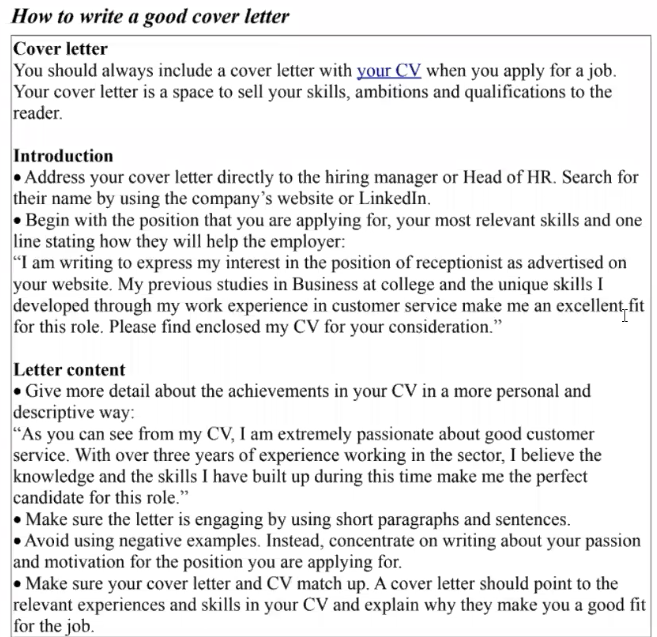
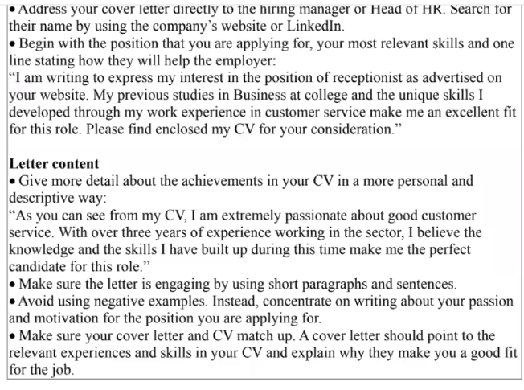
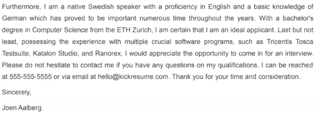

Regule
Conspect


| I - me - my | Я - мне - моё |
| he - him - his | он - ему - его |
| she - her - her | она - ей - её |
| it - its - its | оно - ему - его |
| You - you - your | ты - тебе - твоё |
| We - us - our | мы - нам - наше |
| they - them - their | они - им - их |
myself - я сам
himself - он сам
herself - она сама
itself - но само
yourself - ты сам
ourself - мы сами
themself - они сами
Symbols
# - hash
. - dot
7.5 - seven point five
The end. - The end full stop
@ - at
_ - underscore
- - hyphen/dash/minus
\ - backslash
R - big/capital letter
r - little/small letter
! - exclamation mark
, - comma
& - ampersand
= - equal
'' - single quote
* - asterisk sign
"" - double quote
? - question mark
/ - slash
() - hooks
( - hook
$ - dollar
[] - square brackets
{} - curly braces
% - percent
: - colon
; - semicolon
+ - plus
Numbers
0 - zero, oh, nil
1 - one
2 - two
3 - three
4 - four
5 - five
6 - six
7 - seven
8 - eight
9 - nine
10 - ten
11 - eleven
12 - twelve
13 - thirteen
до 20 - цифра + teen
20 - twenty
21 - twenty-one
30 - thirty
до 100 - десятки: цифра + ty
100 - one hundred
1 000 - one thousand
1 000 000 - one million
1 000 000 000 - one billion
1 000 000 000 000 - one trillion
Числительные
1-й - first
2-й - second
3-й - third
4-й - forth
5-й - fifth
остальные + th
Степени превосходства
old - older - the oldest
bad - wors - the worst
beautiful - more beautiful - most beautiful
Исчисляемые:
as... as... - такой же как
..., than ... - чем ...
either - либо тот, либо этот
each, every - каждый
few, several - несколько
both - и то, и другое
neither - ни то, ни другое
few, many: days, hours, dollars, people
Неисчисляемые:
little, much: time, money, love
a bit of - чуть-чуть
all - все
some, any - какой-то
enough - достаточно
less - меньше
a lot of, lots of - много
more - больше
most - большинство
no, none of - никакого (количества)
plenty of - множество
Questions
What? - что? какой?
Who? - кто?
Where? - где?
When? - когда?
Why? - зачем? почему?
How? - как?
Люди:
Everybody - все
Somebody - кто-то
Nobody - никто
Anybody - кто-нибудь
Пространство:
Everywhere - везде
Somewhere - где-то
Nowhere - нигде
Anywhere - где-угодно
Вещи:
Everything - всё
Something - что-то
Nothing - ничего
Anything - что угодно
Погода:
cold - холодно
warm - тепло
hot - жарко
sunny - солнечно
dark - темно
raining - идёт дождь
windy - ветренно
Time:
Never - никогда
Ever - почти никогда
Sometimes - иногда
Often - часто
Usuall - обычно
Allways - всегда
Anytime - в любое время
last - прошлый | hour, day
this - нынешний | week
next - следующий | month, year
yesterday - today - tomorrow
before - now - after
on:
Monday - Понедельник
Tuesday - Вторник
Wednesday - Среда
Thursday - Четверг
Friday - Пятница
Saturday - Суббота
Sunday - Воскресенье
in:
Winter - Зима
Spring - Весна
Summer - Лето
Autumn - Осень
January - Январь
February - Февраль
March - Март
April - Апрель
May - Май
June - Июнь
July - Июль
August - Август
September - Сентябрь
October - Октябрь
November - Ноябрь
December - Декабрь
Предлоги:
for - для
with - с
without - без
about - о
to - к
from - от
over - над
on - на
in - в
under - под
behind - за
in front of - перед
between - между
next to - рядом
| 3 days |
через - in | 2 weaks | ago - назад
| 4 months |
Артикли:
a (an) - когда говорим об одном из множества
the - когда говорим о конкретном предмете
Частицы:
at - употребляется для обозначения присутствия в какой-то ситуации.
Не внутри помещения (in home), а дома (at home). at 5 o'clock - в 5 часов,
by 5 o'clock - к пяти часам
to - ставит глагол в неопределенную форму - инфинитив.
Слова паразиты и обороты речи:
Well... - ну...
You know - вы знаете
I mean - я имею ввиду
Like - как бы
Sort of - типа того
Something like that - что-то типа того
You know what I mean - ты знаешь, что я имею ввиду
Ask me another - спроси что-нибудь другое
Once up on a time - однажды
It depends - это зависит
Here you go - ну вот
If I were you - если бы я был тобой
Cann't stand - терпеть не могу
Got used to - привык
Don't mind - не против
Rest assured - будьте уверены
How long does it take to go from ... to ...? - Как долго добираться от ... до ...?
Why don't we go? - Почему бы нам не пойти?
Look forward to - Ждать с нетерпением
Apart from the scope of testing it is also helpful to define your key deliverables, testing objectives and time constraints.
Apart from the scope of testing - вне сферы тестирования
it is also helpful - это также полезно
to define your key deliverables - для определения твоих ключевых практических результатов
testing objectives - цели тестирования
time constraints - временные ограничения
makes things confusing - сделает это запутанным
is more likely - скорее всего
are swamped with - быть заваленным (чем-то)
a strategy is essential - стратегия существенна
slip through the cracks - не упустить, не дать ускользнуть (проскользнуть сквозь трещины)
the internal code structure - структура внутреннего кода
implementation details - детали реализации
unaware of technical intricacies - не осведомлен о технических сложностях
undesirable output - нежелаемые выходные данные
capacity to handle - способность справляться
utilizes record and playback tools - использует иструменты записи и воспроизведения
well known - известный
improve skills - улудшить навыки
backlit keyboard - клавиатура с подсветкой
requires more effort - требует больше усилий
skilled labor - умелый труд
executing time and again - выполнение снова и снова
it turned out - оказалось
ahead of time - заранее
get along with people - ладить с людьми
have been compiled by - были состалены
determine if it works as it should - определить работает ли оно как должно
in nook and corners - в укромных уголках
security measures - меры безопасности
cyber threats - кибер угрозы
all means - все средства
risk assessment - оценивание рисков
ethical hacking - этический взлом
security scanning - сканирование безопасности
to whom it may concern - тем, кого это касается
Построение фразы:
- Определить вспомогательный глагол: do, be, have
- Определить форму: отрицательную, вопросительную или утвердительную
- Определить время: прошлое, настоящее будущее
| Существительное | Глагол | Существительное | Инфинитив | Как | Где | Когда |
|---|---|---|---|---|---|---|
| подлежащее | сказуемое | существительное | герундий | наречие | существительное | существительное |
| автор действия | действие | объект | дополнительная информация | |||
| Time | Simple (do) - просто факт действия (повторяющегося действия) | ||
| Future | Действие в будущем | ||
| ? | + | - | |
| Active: will + V1 | |||
| Will I break (paint) the wall tomorrow? | I will break (paint) the wall tomorrow. | I will not break (paint) the wall tomorrow. | |
| Passive: will be + V3 (V1+ed) | |||
| Will the wall be broken (painted) by me tomorrow? | The wall will be broken (painted) by me tomorrow. | The wall will not be broken (painted) by me tomorrow. | |
| Present | Действие в настоящем (he, she, it does V1+s) | ||
| ? | + | - | |
| Active: V1 | |||
| Do I break (paint) the wall every day? | I break (paint) the wall every day. | I do not break (paint) the wall every day. | |
| Passive: am, is, are + V3 (V1+ed) | |||
| Is the wall broken (painted) by me every day? | The wall is broken (painted) by me every day. | The wall is not broken (painted) by me every day. | |
| Past | Действие в прошлом | ||
| ? | + | - | |
| Active: V2 (V1+ed) | |||
| Did I break (paint) the wall yesterday | I broke (painted) the wall yesterday. | I did not break (paint) yesterday. | |
| Passive: was (were) + V3 (V1+ed) | |||
| Was the wall broken (painted) by me yesterday? | The wall was broken (painted) by me yesterday. | The wall was not broken (painted) by me yesterday. | |
| |
|||
| Perfect (have) - результат действия (оконченное действие) | |||
| Future | Действие в будущем | ||
| ? | + | - | |
| Active: will have + V3 (V1+ed) | |||
| Will I have broken (painted) the wall tomorrow? | I will have broken (painted) the wall tomorrow. | I will have not broken (painted) the wall tomorrow. | |
| Passive: will have been + V3 (V1+ed) | |||
| Will the wall have been broken (painted) by me tomorrow? | The wall have been broken (painted) by me tomorrow. | The wall will have not been broken (painted) by me tomorrow. | |
| Present | Действие в настоящем (he, she, it has) | ||
| ? | + | - | |
| Active: have (has) V3 (V1+ed) | |||
| Have I broken (painted) the wall today? | I have broken (painted) the wall today. | I have not broken (painted) the wall today. | |
| Passive: have (has) been + V3 (V1+ed) | |||
| Has the wall been broken (painted) by me today? | The wall has been broken (painted) by me today. | The wall has not been broken (painted) by me today. | |
| Past | Действие в прошлом | ||
| ? | + | - | |
| Active: had V3 (V1+ed) | |||
| Had I broken (painted) the wall yesterday | I had broken (painted) the wall yesterday. | I had not broken (painted) yesterday. | |
| Passive: had been + V3 (V1+ed) | |||
| Had the wall been broken (painted) by me yesterday? | The wall had been broken (painted) by me yesterday. | The wall had not been broken (painted) by me yesterday. | |
| |
|||
| Continuous (be) | |||
|---|---|---|---|
| Perfect continuous (have been) | |||
| Tense | Active | Passive |
|---|---|---|
| Simple Past | I worked yesterday | Work was done by me yesterday |
| Simple Present | I work every day | Work is done by me |
| Simple Future | I will work tomorrow | Work will be done by me tomorrow |
| Continuous Past | I was working all day yesterday | Work was being done by me all day yesterday |
| Continuous Present | I am working now | Work is being done by me now |
| Continuous Future | I am going to work tomorrow | Work is going to be done by me tomorrow |
| Perfect Past | I had done work. | Work had been done by me |
| Perfect Present | I have done work | Work has been done by me. |
| Perfect Future | I will have done work | Work will have been done by me |
| Modal verbs | I (must / can / might) work | Work (must / can / might) be done by me |
| Modal Perfect | I should have done work | Work should have been done by me |
- Перед существительным почти всегда стоит определитель (артикль, количественное, числитель, местоимение и т.д.)
- Глагол - либо таблица времён - три формы, либо модальные. Инфинитив и герундий после объекта.
- Обстоятельство времени "когда" обычно в конце, но может перемещаться в любое место предложения.
Modal verbs
После модальных глаголов всегда стоит инфинитив без частицы to.
Модальный глагол всегда употребляется со смысловым глаголом, который стоит в начальной форме (must do, could see).
I can type very fast. — Я могу печатать очень быстро.
Модальные глаголы имеют одну форму во всех лицах и числах кроме have to, который принимает форму has после местоимений he, she, it.
Модальные глаголы всегда стоят в настоящем времени (даже в контексте будущего времени), однако некоторые из них могут принимать прошедшую форму: can — could; may — might, must — had to.
В отрицательных и вопросительных предложениях модальные глаголы не употребляются со вспомогательными, за исключением have to.
I can’t do it. — Я не могу этого сделать.
May I use your laptop? — Могу я воспользоваться вашим ноутбуком.
What do I have to sign? — Что я должен подписать?
| Прямое значение | Вероятное значение | Модальные конструкции | |||
|---|---|---|---|---|---|
| can | могу, умею | could | может быть | (be) able to, (be) going to (время любое, отрицание: is not be able to) be |
имею возможность, собираюсь am, is, are, was, were |
| shall | следует сделать | should | следовало бы | ought to (время любое, отрицание: ought not to) had better (время present, отрицание: had better not) |
следует сделать так лучше сделать так |
| may | можно | might | возможно | ||
| will | будет | would | было бы | used to (время past, отрицание: didn’t use to) |
делал это раньше |
| must | должен | have to (время любое, отрицание: don’t have to) |
должен | ||
If-clauses
| 0 conditionals real | If I am home, I always watch TV. | Если я дома, я всегда смотрю ТВ. | If + present simple |
| 1 conditionals real | If I am home tomorrow, I will watch TV. | Если я буду дома завтра, я посмотрю ТВ. | If + present simple, will + простой инфинитив Действия вероятно произойдут в будущем при определенных условиях |
| 2 conditionals unreal | If I were home, I would watch TV. | Если бы я был дома, я бы посмотрел ТВ. | If + past simple, would + простой инфинитив Действие вымышленное, которое могло бы произойти сейчас или в будущем. |
| 3 conditionals unreal | If I had been home yesterday, I would have watched TV. | Если бы я был дома вчера, я бы посмотрел ТВ. | If + past perfect, would + перфектный инфинитив Действие вымышленное, которое могло бы произойти в прошлом, но не произошло. |
- Условные и поясняющие предложения:
- Главное предложение (main clause) + придаточное предложение (relative clause)
- Запятая: relative clause, main clause. Main clause relative clause.
Запятая НЕ ставится если придаточное предложение уточняет или поясняет смысл предложения.
Т.е. без него не понятен смысл предложения.
Запятая ставится в условиях и дополнительных пояснениях, без которых смысл не меняется. - В relative clause вспомогательный will не ставится.
В main clause вместо will могут быть can, must, have to, а вместо would – should, might, could.
- Relative clause начинается:
- Условия:
if - если
when - когда
while - в то время как
before - до того как
after - после
as soon as - как только
until ( till )- до момента
as long as - пока
unless - если не
- Пояснения:
who - к людям
whicn - к предметам и животным
that - к людям и предметам
- Mixed conditionals:
or - if+past perfect + would+простой инфинитив
либо
if+past simple + would+перфектный инфинитив - I wish clause:
If I did it, it would be great. = I wish I did it.
Correspondence
Letter
Cover letter


Resume / CV
Lesson 1
Dialog 1 Hello James, how are you? Hi Sussan, I'm fine thank's. And you? Oh, I'm a little tired. Where are you going? I'm going to the coffee. Do you want to go with me? Shure, let's go. I'm going home. I'm not going home. Hello, mister Jonson. How are you? Good morning, missis Willyams, I'm very good, thank you. And you? I'm well, thank you. Are you going home after work? I'm not. I going to the coffee with my friend. That's good. Have a nice day. Goodbye. Thank you missis Willyams. Goodbye.
Words 1 pretty [] - довольно-таки grand [] - большой, великий volume [] - громкость coach [] - автобус, вагон, телега condition [] - состояние
Irregular verbs 1 abide, abode, abode - терпеть, быть верным arise, arose, arisen - возникать, подниматься awake, awoke, awoken - будить, просыпаться backslide, backslid, backslid - отступаться от веры be, was (were), been - быть bear, bore, born - нести beat, beat, beaten - бить become, became, become - становиться befall, befell, befallen - случаться, приключаться begin, began, begun - начинать
Verbs 1 arouse [] - вызывать, пробуждать provide [] - обеспечивать, снабжать cope with [] - совладать, справиться land [] - приземляться
Lesson 2
Dialog 2 Hello Kate, nice to see you. Hello John, how was your flight? How are you? Oh, It was good. Thank's. I'm great. And you? I'm very happy. Are we going? Yes, let's go. I'm feeling great. How are you? I'm great. I'm feeling great. I'm not great. I'm not felling great. Are you happy John? I'm a little tired. It was not good. The flight was not good. The flight was great. The flight wasn't good. The flight wasn't great. Are we going? Let's go. Where do you want to go John? Are you hungry? I'm not hungry, but I'd like something to drink. Why don't we go to the coffee? Do you like coffee? Yes, I like coffee. Do you? No, I don't. I don't like coffee. Where are you going? Where do you want to go? Do you want to go with me? Are we going? Let's go. Where do you want to go John? To the coffee. Let's go to the coffee. Why don't we go to the coffee? I like coffee. I want coffee. I don't like coffee. I don't want coffee. Good coffee. I like good coffee. Not good coffee. I'm bad. I'm bad at it. You not bad. This coffee isn't bad. Are you hungry? I'm not hungry. Do you want to the coffee? Yes, I want to.
Words 2 scope [] - область, район pack [] - пачка, связка craft [] - ремесло, мастерство worth [] - стоимость, стоящий urban [] - городской pond [] - пруд familiar [] - знакомый column [] - столб, колонна guilt [] - вина
Irregular verbs 2 behold, beheld, beheld - увидеть, наблюдать bend, bent, bent - гнуть bereave, bereft, bereft - отнимать beseech, besought, besought - умолять beset, beset, beset - окружать bet, bet, bet - держать пари bid, bid, bid - предлагать цену bid, bade, bidden - приглашать bide, bided, bided - ждать, оставаться bind, bound, bound - связывать
Verbs 2 tap [] - стучать owe [] - задолжать include [] - включать, содержать appoint [] - назначать, утверждать celebrate [] - праздновать abuse [] - оскарблять
Lesson 3
Dialog 3 Welcome to the Max coffee May I take your order? Good morning. Coffee please. One coffee with milk? Yes, one coffee with milk and one tea for my friend please. With sugar? Yes, please. Welcome to the Max coffee Nice to see you. How are you? Are you hungry? I'd like something to drink. May I take your order? Good morning. Coffee please. Yes, please. No, thank you. Wood you like some coffee? Yes, please. I'm going to the coffee. Do you want coffee? Yes, please. Some coffee. One coffee. One friend. I have one friend. One coffee, please. One coffee with milk? Do you want coffee with milk? Why don't we go to the coffee? Shure, let's go. How was your flight? Are you hungry. I'm a little tired. Thank you. I'm not hungry. I'm hungry. What wood you like to drink? I'd like to drink some tea. I'd like to drink some coffee. Wood you like some tea. Do you want some tea? Yes, I want some tea. I want my tea with milk. Yes, one coffee with milk and one tea for my friend please. One coffee for my friend please. Do you like milk? Yes, I like milk. No, I don't like milk. I don't want milk. I want some tea. With sugar? Do you want your tea with sugar? I don't like sugar. How is your american coffee with milk? Different, but it's good. I was thirsty. And how is your tea? It tastes great. Thank you. Are we going home now? Yes, we are going home. American coffee with milk and suger. How is your american coffee with milk. My coffee is good. My coffee is different, but it's good. I'd like different coffee. I want different coffee. I'm going to a different coffee. Coffee is different than tea. Yes, I like coffee with milk and tea with suger. Do you like coffee and tea with suger. Yes, I drink coffee and tea with suger. One tea spoon of suger. I drink tea with one tea spoon of suger. I like coffee with one tea spoon of suger. I want tea with a tea spoon of suger. I don't want tea with suger. Tea with suger is great. Tea tastes great. It has a great taste. Coffee with milk tastes good. How does your coffee taste? How does my tea taste? It tastes bad. It doesn't taste good. I don't liked with suger. I was thirsty. I'm thirsty. I'm hungry. I'd like to drink some tea. May I take your order? I'd like to have some coffee with suger and tea with milk, please. Is your tea with suger? Yes, with one tea spoon of suger. Are we going home now? Are we going to the coffee now? Yes, we are going home. Goodbye.
Words 3 arm [] - рука chamber [] - кабинет, зал behavior [] - поведение cable [] - кабель, канат
Irregular verbs 3 bite, bit, bitten - кусать bleed, bled, bled - кровоточить bless, blest, blest - благословлять blow, blew, blown - дуть, взрывать break, broke, broken - прерывать, ломать breed, bred, bred - выводить, порождать bring, brought, brought - приносить broadcast, broadcasted, broadcasted - вещать, распространять build, built, built - строить burn, burnt, burnt - гореть
Lesson 4
Dialog 4 We are here John. That's my house. Do you like it? Yes, I like it very much. Your house is big. Thank you. It's not so big. Come to see your room. Ok. let's go. Come Inside. We are here. That's my house I'm going home. That's my house Welcome to my house. Good morning. Welcome to the coffee. How are you? Fine, thank you Fine, thank you very much Do you like it? Yes, I like it very much. Do you like my house? Yes, I like it very much. Do you like coffee with milk? Yes, I like it very much. No, I don't like it. Do you like coffee with suger? No, I don't like it. No, I don't like coffee with suger. Do you like my friend? Yes, I like him very much. Your house is big. Big house. Your house is not big. Your house isn't big. A big coffee please. I like to drink a big coffee. I want a big tea. With a big spoon of suger. I don't like suger. My house is very big. Do you like it? Yes, I like it very much. I don't like his house. Something small. My house is small. My house is small and his house is big. Is your house big? No, my house is small. It's not so big. Come to see your room. Do you like your room? Yes, I like it very much. My room is big. I have a big house, but a small room. A small house with big rooms. Do you like my house? Yes, it's OK. Yes, I'm OK. Thank you. Do you like tea with suger? Yes, it's OK. Do you want to see my house? Yes, come inside. There is a suger in my coffee. Come inside the coffee. Do you like the inside? The coffee is big. Do you like your room? Yes, I like it very much. That is your bed and your table. Where is the bathroom? The bathroom is next to your room. Thank you. That is your bed and your table. Your big bed. Your small table. Do you have a big bed in your room? We are here. That's my house. Do you like it? Yes, I like it very much. That's your room. Do you like it? It's OK. Bed in the room. Table in the coffee. I want a small table in the coffee. I'd like a big bed in the room. I'm not going home. Where are you going? I'm going to the coffee. Do you want to go with me? How are you mister Jonson? I'm very good. And you? I'm good. Thank you. Are you going home after work? I'm not. OK. Where is the bathroom? It's next to your room. The bathroom is next to your room. The table is next to the bed. My room is next to your room. We are here. We are in your room. I'm in the bathroom. I'm a little tired. And you? I'm feeling OK. Do you like coffee? Yes, I do. I like coffee very much. And you? Not so much. I like tea. Is your coffee big? Not so big. Where is the suger? The suger is next to the coffee. The coffee is next to my house. Let's go there. I'm going home. Your house is big. It's not so big. My house is small. I like it very much. I like your small house very much. Thank you very much.
Words 4 intelligent [] - умный cream [] - крем, сливки root [] - корень human [] - человек wide [] - широкий, просторный
Irregular verbs 4 burst, burst, burst - лопаться bust, bust, bust - разрушать buy, bought, bought - покупать cast, cast, cast - бросать catch, caught, caught - поймать chide, chided, chidden - ругать choose, chose, chosen - выбирать cleave, clove, cloven - рассекать cling, clung, clung - цепляться clothe, clad, clad - одевать
Verbs 4 admit [] - признавать, допускать persist [] - сохраниться compare [] - сравнить appropriate [] - присвоить vanish [] - исчезнуть stir [] - шевелить expose [] - обнажать, выставлять narrate [] - повествовать, рассказывать
Lesson 5
Dialog 5 Good morning John. How are you today? Do you want some breakfast? I'm fantastic, thank's. Yes, I'd like some breakfast. Ok, come to the kitchen and I will make some american breakfast I'm coming. Good morning How are you today? today I'm feeling good today What did you do today? How are you today? I'm fantastic, thank's. fantastic I'm feeling fine I'm feeling OK I'm feeling bad I'm tired Do you want some coffee? Do you drink coffee with milk? Yes, I drink coffee with milk and suger. Wood you like some tea? No, thank you. Are you hungry? Yes, I'm very hungry. Do you want some breakfast? Wood you like some breakfast? Yes, I'd like some breakfast What wood you like for breakfast? What do we have for breakfast today? What do you want to drink today? How are you today? I'm tired today. Do you want something to drink? I'm hungry. Do you want some breakfast? I'd like some dinner. I want some american dinner. Welcome. What wood you like for dinner? I'd like some breakfast today. May I take your order? I'd like a big coffee with milk and one tea spoon of suger please. Ok, come to the kitchen. Come to the kitchen Where is the kitchen? The kitchen is next to the bathroom. The kitchen is small and the bathroom is big. The kitchen is big. The dinner is in the kitchen today. The dinner will be in the kitchen today. The kitchen is not so big. There is a big table in the kitchen. Are we going to the coffee now? Are we going home now? Come to the coffee. Yes, we are coming. Come to the kitchen. I'm going to the bathroom. I'm going home. Are you coming with me? I'm coming with you. Why don't we go to the coffee? Shure, let's go. Let's go there. I'm here Kate. Good. Do you like cornflakes with milk John? Yes, I like cornflakes with milk, but I can make scrambled eggs. Do you want some? That's fantastic. You will make scrambled eggs and I will make fresh orange juice. Ok. I'm here Kate. cornflakes cornflakes with milk Yes, I like cornflakes with milk What do you want for breakfast. I'd like some cornflakes with milk. And a big coffee with milk. That's fantastic. I want my tea with milk. Wood you like some tea? Yes, please. I can make scrambled eggs scrambled eggs scrambled I will make What do you want for breakfast I'd like some scrambled eggs for breakfast please. What do you want for dinner? I don't want dinner. Dinner is in the kitchen. Are you hungry? Yes, I'm very hungry. How do you feel today? I'm feeling fantastic today. What do you want for breakfast? Cornflakes with milk or scrambled eggs? Cornflakes are small and scrambled eggs are big. Do you like cornflakes with milk? Do you like scrambled eggs? I like scrambled eggs. I like scrambled eggs very much. I like cornflakes with milk. What do you want for breakfast today? I'd like to have big scrambled eggs and coffee with milk. American breakfast. I can make some american breakfast. I will make american breakfast. I will make big dinner. I will make fresh orange juice. Do you like fresh orange juice? Yes, I like fresh orange juice. I'd like big orange juice please. Big orange juice and small coffee with milk. Fresh scrambled eggs and juice. Do you want some scrambled eggs Kate? That's fantastic. I'd like some scrambled eggs please. How are you today? I'm fantastic. Thank you.
Words 5 width [] - ширина quarter [] - четверть opening [] - отверстие library [] - библиотека link [] - связь, звено
Irregular verbs 5 come, came, come - приходить cost, cost, cost - стоить creep, crept, crept - ползать crossbreed, crossbred, crossbred - скрещивать cut, cut, cut - резать dare, durst, dared - осмелиться daydream, daydreamt, daydreamt - фантазировать dig, dug, dug - копать disprove, disproved, disproven - опровергать dive, dove, dived - нырять
Verbs 5 conclude [конклюд] - заключать, завершать put it down to - объяснить, списать на declare [диклэ:] - объявлять squeeze [скви:з] - сжимать cite [сайт] - упоминать, цитировать punish [паниш] - наказывать restrain [рэстрэйн] - сдерживать, удерживать constrain [констрэйн] - ограничивать (препятствием) suspect [саспэкт] - подозревать, подозреваемый converse [конвё:с] - беседовать
Lesson 6
Dialog 6 I'm going to meet my friends Do you want to go with me? Shure Kate, I'd like to Where are they going to be? They are going to be in the restaurant In which restaurant? At the blue see restaurant I'm going to I'm going to meet meet my friends I'm going to meet my friends Do you want to go with me? Where do you want to go? I want to go to the coffee I'd like to go to the coffee which one ? which to which coffee? Shure Kate I'd like to I'd like to go today What do you want to order? I'd like to order fresh orange juice Do you like orange juice? Yes, I like it very much I'd like some fresh coffee with milk and suger One orange Some coffee One coffee Welcome to the coffee Good morning Good morning, Welcome Where are they going to be? I'm going to meet my friends I'm going to drink juice I'm going to have dinner I'm going to make breakfast I'm going to go home Are you going to be there? Are you going to order? Yes, I'm going to What wood you like to drink? I'd like to drink some tea I'd like to drink some coffee Where are they going to be? They are going to be in the restaurant Where are they going to be? They are going to be in the restaurant restaurant This restaurant is big and this coffee is small This restaurant is very big I'm going to have dinner in the restaurant today Are you hungry? In which restaurant? At the blue see restaurant In which coffee? At Max coffee Ok, let's go there Where, to the restaurant or to the coffee? Let's go to the restaurant Blue see restaurant? What type of restaurant is it? This is see food restaurant That's fantastic. I like seefood That's great, you will like my friends too I'm drinking juice What type of juice is it? orange juice What type of coffee do you like? I drink coffee with milk One coffee with milk? Yes, one coffee with milk I'm going to meet my friends Do you want to go with me? Where do you want to go? To the restaurant To which restaurant? In which restaurant? To the blue see restaurant In the blue see restaurant I'm going to go to the coffee Are you going to go with me? I'm not shure I want to have dinner, I'm hungry Ok, I will eat some breakfast Do you like see food? Yes, I like see food No, I don't like see food You will like my friends too I'm going to the restaurant with seefood Wood you like some breakfast? Yes, I'd like some breakfast What wood you like for breakfast? What do we have for breakfast today? What do you want to drink today? Do you want something to drink? I'm hungry I'd like some dinner I want some american dinner Welcome, what wood you like for dinner? I'd like some breakfast today May I take your order? Big coffee with milk and one teaspoon of suger please Come to the kitchen Where is the kitchen? The kitchen is next to the bathroom The kitchen is small and the bathroom is big. The kitchen is big Are we going to the coffee now? Come to the coffee Yes, we are coming Come to the kitchen Are you coming with me? I'm coming with you Why don't we go to the coffee? Shure, let's go Goodbye
Words 6 laughf [] - смех example [] - пример stake [] - стойка, кол decent [] - приличный, достойный glove [] - перчатка
Irregular verbs 6 do, did, done - делать draw, drew, drawn - тянуть, чертить dream, dreamt, dreamt - мечтать, видеть сны drink, drank, drunk - пить drive, drove, driven - управлять машиной dwell, dwelt, dwelt - обитать eat, ate, eaten - кушать fall, fell, fallen - падать feed, fed, fed - кормить feel, felt, felt - чувствовать
Verbs 6 cure [] - лечить avoid [] - избегать think over [] - обдумать enable [] - давать возможность determine [детермэн] - определять waste [вэйст] - напрасно тратить bet [бэт] - делать ставку settle [сэтл] - решить, поселиться approve [эпрув] - утвердить emit [эмит] - излучать, испускать
Lesson 7
Dialog 7 John, meet my friends. This is Sussan and James. Hello Sussan, Hello James. Pleased to meet you. How are you? They are tourist's guides. And they can take you on the trip around the city. That's great, thank you very much. I cann't wait. How are you? Fine, thank you We are pleased to meet you too. Meet my friends I'm pleased to meet you Nice to see you Kate Hello Kate, nice to see you How are you John? I'm great, thank you I'm great, I'm feeling great Thank you missis Willyams How are you mister Jonson? Where are you going? Where do you want to go? I'm feeling very good Are you going home after work? No, I'm not going Do you want to go with me? They are tourist's guides. And they can take you on the trip around the city. They are tourists Are you tourist? Yes, I'm a tourist Take me on the trip Do you like trips? I'm a tourist and I like trips I like trips around the city Do you like trips around the city? San-Francisco is a big city My city is small Do you like your city? My city is great I will take a trip around my city Do you going to see my city Yes, I'd like to I want to be a tourist guide I want to be your guide I cann't wait I'm going to meet my friends You will like my friends too Where are they going to be? They are going to be at the Max coffee In which coffee? At Max coffee Ok, let's go there Hello sir, may I take your order? Hello, yes please I'd like some red wine to drink And for the main course, sir? Shrimps please, are they spicy? Yes sir, they are spicy Good, I like spicy food May I take your order? Yes, please I'd like some red wine to drink I drink red wine Do you drink red wine sir? Wood you like red wine sir? Yes, please May I take your order? I'd like some coffee with suger and tea with milk please Is your tea with suger? Yes, with one teaspoon of suger American coffee with milk and suger How is your american coffee with milk It's good Come to the kitchen Where is the kitchen? The kitchen is next to the bathroom The kitchen is small and the bathroom is big The kitchen is big I cann't wait I can wait And for the main course, sir? Shrimps please, are they spicy? I'd like shrimps for the main course, please I'd like shrimps Are they spicy? The shrimps are spicy My dinner is spicy Is the breakfast spicy? No, it's not Are shrimps spicy? Yes sir, they are spicy Good, I like spicy food I'm hungry, let's make some food I like seefood I'm going to make some food for dinner What type of course do you like? I like spicy food. And you? I don't like spicy courses. And I like shrimps You have to wait for the shrimps I have a big house, but a small room Small house with big rooms Your big bed I want a small table in the coffee The table is next to the bed My room is next to your room We are here
Words 7 fisherman [] - рыбак conscious [] - сознательный anywhere [] - где угодно anger [] - гнев stuff [] - вещи, всякая всячина fortunate [] - удачный
Irregular verbs 7 fight, fought, fought - сражаться find, found, found - находить fit, fit, fit - оснащать, подгонять flee, fled, fled - спасаться fling, flung, flung - кидать fly, flew, flown - летать forbear, forebore, forborne - сдерживаться forbid, forbade, forbidden - запрещать forcast, forcast, forcast - прогнозировать forgo, forwent, forgone - предшествовать
Verbs 7 detect [] - обнаружить emerge [] - появляться take [] - брать fail [] - потерпеть неудачу shut out [] - не впускать depict [] - изображать, описывать
Lesson 8
Dialog 8 What are you eating there John? I'm eating shrimps. They are very spicy. Do you like spicy food? Unfortunately, I don't. I like mild food. What course do you have? I'm having fish, fish with carrots. Is it good? It's delicious Are you going there? Yes, I'm going there What are you eating? I'm eating breakfast I'm eating shrimps for dinner What wood you like to eat? I'd like something spicy Are shrimps there? Yes, the shrimps are small Hello Sussan, hello James, pleased to meet you How are you? Fine, thank you We are pleased to meet you too Meet my friends They are tourists Are you a tourist? Yes, I'm a tourist Take me on the trip Around the city Do you like trips around the city? Do you like your city? Unfortunately, I don't like. I like mild food. What course do you have? Spicy shrimps Do you like shrimps? Unfortunately, I don't. Are they spicy? Unfortunately, they aren't I'm having fish, fish with carrots. Is it good? It's delicious Is the fish good? It's delicious How does it taste? It's mild The fish is fresh I like fresh fish very much Wine please Red wine please I don't like carrot Do you drink red wine sir? Wood you like red wine sir? And for main course sir? I'd like shrimps for the main course I like see food I'm going to make some food for dinner You will like my friend too Where are they going to be? They are going to be at the Max coffee Goodbye Sussan, Goodbye James. See you soon. Goodbye Kate, I hope you had a great time. Yes, we did thank you How are you coming home? By taxi. And you? We will walk Goodbye Kate, See you soon. I hope you had a great time. I hope you are hungry I hope they are spicy I hope we meet We had a nice time Meet my friends Meet my friend I'm pleased to meet you How are you John? I'm great thank you I drink red wine I like to drink red wine Do you drink red wine sir? I cann't wait I can wait And for the main course sir? I'd like shrimps for the main course How are you coming home? Are you coming? How are you coming? We will come home by taxi I'm coming home by taxi Are you coming with me? How are you going to the restaurant? I'm going by taxi How are you going to the coffee? I'm going by taxi How your friend are going? They are going by taxi We will walk We can walk Are you going by taxi? No, we will walk Let's go for a walk We are going for a walk Take a walk We are taking taxi soon See you soon Are you going there? Yes, I'm going there What are you eating I'm eating shrimps for dinner I'd like something spicy Are shrimps there? This is fish with carrot Is it good? It's delicious
Words 8 wilderness [] - глушь, дикая местность noise [] - шум fat [] - жир, жирный steady [] - устойчивый loss [] - потеря path [] - путь upside down [] - вверх cozy [] - уютный
Irregular verbs 8 forsee, forsaw, forseen - предвидеть fortell, fortold, fortold - предсказывать forget, forgot, forgotten - забывать forgive, forgave, forgiven - прощать forsake, forsook, forsaken - оставлять forswear, forswore, forsworn - отрекаться freeze, froze, frozen - замерзать frostbite, frostbit, frostbitten - отморозить get, got, gotten - получать gild, gilt, gilt - украшать
Verbs 8 amaze [эмэйз] - поражать, изумлять fascinate [фасинэйт] - очаровывать exclude [эксклюд] - исключать carry out [кэри аут] - выполнить miss [мис] - скучать render [рэндэ] - оказывать, отдавать accelerate [эксэлэрэйт] - ускорять poke [поук] - совать, тыкать
Lesson 9
Dialog 9 Kate, I want to go shoping tomorrow What do you want to buy John? Some souvenirs like clothes Do you want to buy a t-shirt? Yes, a t-shirt and a hats I want to go shoping tomorrow I wanna go shoping tomorrow I want to go shoping today come shoping Are you going shoping with me? Today or tomorrow? I want to go shoping I want to go shoping tomorrow Are you going there? Yes, I'm going there What are you eating? I'm eating breakfast I'm eating shrimps for dinner Hello Kate, nice to see you How are you? Are you happy John? I'm very happy I'm tired I'm a little tired The flight was not good It was not good The flight was not great What do you want to buy John? Some souvenirs like clothes I like souvenirs Souvenirs like clothes I want to by clothes Where do you want to buy clothes? Where do you want to go shoping? Do you know where do shop? I want to buy coffee I'd like to buy shrimps I will buy fish fresh fish What do you want to by? I want a t-shirt and a hat I want a t-shirt I want a t-shirt and a hat What are you buying? I'm buying a hat Are you buying a hat too? No, I'm not buying I'm buying a t-shirt Do you like it? Yes, I like it very much What are you buying? I have to buy some clothes What are you buying? I'm buying food Are you hungry? Yes, I'm going to buy see food Do you like american food? It taste great Thank you Kate, do you know where I can buy presents? Yes I do. You shood go to the shoping mall Where is it? It's in the center of the city I will go with you to the shop I want to buy a new dress Ok, come with me Do you know? Do you know where? Yes I know You shood go to the shoping mall Go to the shoping mall You shood buy in the shoping mall You shood buy presents Where can I buy presents? I you going there? Yes, I'm going there What are you eating? I'm eating breakfast What wood you like to eat? I'd like something spicy Are shrimps there? Unfortunately I don't like I like mild food What course do you have? Spicy shrimps Do you like shrimps? Unfortunately I don't Where is it? It's in the center of the city Where is the shoping mall? In the center It's in the center of the city Where is the table? It's in the center of the kitchen Where is the bathroom? It's in the center of the house Where do you want to go? Do you want to go with me? I will go with you to the shop To the shop I will take you to the shop I want to buy something I want to buy a new dress I want to buy a new dress at the shop New clothes I want to buy new clothes A new t-shirt, hat and dress I don't want to buy a hat Ok, come with me Unfortunately, I cann't come I cann't go shoping I cann't go to the shoping mall Why not? I don't have time
Words 9 room [] - комната, место, пространство lens [] - линза, объектив tail [] - хвост can [] - банка flour [] - мука magazine [] - журнал tense [] - напряженный way [] - способ
Irregular verbs 9 give, gave, given - давать go, went, gone - идти grind, ground, ground - молоть grow, grew, grown - рости hand-feed, hand-fed, hand-fed - подавать вручную hand-write, hand-wrote, hand-written - писать вручную hang, hung, hung - висеть have, had, had - иметь hear, heard, heard - слышать heave, hove, hove - напрягаться
Verbs 9 encourage [инкорэдж] - поддерживать, поощрять discourage [дискорэдж] - отговорить, демотивировать harass [хэра:с] - преследовать, тревожить boil [бойл] - кипеть, кипятить, варить weave [ви:в] - плести, ткать remove [рэмув] - убрать, удалить exploit [эксплойт] - использовать, эксплуатировать contain [контэйн] - содержать bargain [багэн] - торговаться elaborate [элаборэйт] - разработать, проработать
Lesson 10
Dialog 10 Good morning mister Jonson! How are you? I'm very good. Thank you. Thank you missis Willyams. Where are you going after work? With my friend. Are you going home mister Jonson? I'm going to the coffee. Do you want to go with me? I'm a little tired. Shure, let's go. I'm going to the coffee with my friend. Nice to see you Kate. I'm filling great. Are you happy John? I'm very happy. How was your flight? It was not good. Where are you going? Are we going? Why don't we go to the coffee? Do you like coffee? I'm going to the coffee. Do you want coffee? Good coffee. Are you hungry? I'd like something to drink. Welcome to the coffee. May I take your order? One coffee please. One coffee with milk? I'd like to drink some tea. I want my tea with milk. One tea for my friend please. American coffee with milk and suger. I'd like different coffee. And how is your tea? I was thirsty. I have one friend. I drink tea with one teaspoon of suger. It taste great. Are we going home now? Goodbye. We are here. That's my house. Do you like it? Yes, I like it very much. Your house is big. With the big spoon of suger. I don't like suger. My house is small and his house is big. Come to see your room. Are you OK? Yes, come inside. Do you have a big bad in your room? Table in the coffee. Where is the bathroom? The bathroom is next to your room. The table is next to the bad. Not so much. It's not so big. My house is small. I like your small house very much. Thank you very much. I'm feeling good today. What did you do today? I'm feeling fantastic. What wood you like for breakfast? What are we have for breakfast today. Big coffee with milk and one teaspoon of suger please. Come to the kitchen. Where is the kitchen? The kitchen is next to the bathroom. Yes, I like cornflakes with milk. What do you want for dinner. I don't want dinner. I'd like big scrambled eggs and coffee with milk. I'd like big orange juice please. Which one? Where are they going to be? I'm going to drink juice. They going to be in the restaurant. What type of restaurant is it. What type of coffee do you like. In the blue see restaurant. I'm not shure. Yes, I like seefood. You will like my friends too. Will you go to the coffee next to my house with me? Meet my frieds. We are pleased to meet you too. They are tourists guides. They take you on the trip. And for the main course sir? I'm a tourist, and I like trips. Around the city. I drink red wine. The shrimps are spicy. What type of course do you like? What are you eating there? Unfortunately, I don't like. I like mild food. I'm having fish with carrots. Is it good? It's delicious. Fresh fish. The fish is fresh. See you soon. Goodbye Kate, see you soon. I hope you had a great time. Yes, we did. Thank you. I hope you are hungry. I'd like shrimps for the main course. Are you coming? How are you coming? I'm going by taxi. How your friends are going? They are going by taxi. And you? We will walk. We are going for a walk. The fish is on the table. I want to go shoping today. Come shoping. Today or tomorrow? I wanna go shoping tomorrow. What do you want to buy. Some souvenirs. Souvenirs like clothes. Where do you want to by clothes? Do you know where to shop? I'd like to by shrimps. I want a t-shirt and a hat. Are you bying a hat too? No, I'm not bying. Do you like it? I have to by some clothes. Do you know where? Do you know where I can by presents? You shood go to the shoping mall. What are you eating? It's in the center of the city. Where is the table? It's in the center of the kitchen. I will take you to the shop. I want to by a new dress.
Words 10 thumb [] - большой палец boundary [] - граница, черта wage [] - заработок, оплата point [] - точка, смысл chef [] - шеф-повар considerable [] - крупный, значительный multiple [] - множественный
Irregular verbs 10 hew, hewed, hewn - рубить hide, hid, hidden - прятать hit, hit, hit - поражать hold, held, held - держать hurt, hurt, hurt - ранить inbreed, inbred, inbred взращивать inplay, inplaid, inplaid - инструктировать input, inputted, inputted - вводить interbreed, interbred, interbred - скрещиваться interweave, interwove, interwoven - сплетать
Verbs 10 lessen [] - уменьшать favor [] - благоприятствовать prompt [] - побуждать, подстрекать observe [] - наблюдать spill [] - проливать, рассыпать result in [] - привести к greet [] - приветствовать preserve [призёв] - сохранять, беречь
Lesson 11
Dialog 11 John, what do you think about that green dress? Does it fit me? Yes, it fits you. Do you want to try this trousers on? No thank you they are not my type. Did you find the right t-shirt? I'm searching. What do you think? About that green dress It's greate. That green dress is great. Does it fit me? Yes, it fits you. Does it taste good? Yes, it tastes good. Does he drink wine? Yes, he drinks wine. No he doesn't drink wine. Does this dress fit me? I think it's too big. I think the green dress is too big for you. What about the red one? The red one is ok. What do you think about blue dress? I think it's too small. I will take the red dress. I will buy the red dress. And what about you? I will take this red t-shirt. Do you want to try this trousers on? No, I don't. No, thank you. Try this t-shirt on. Ok, I will try it on. Do you like green trousers? No, I like blue trousers. I will buy the red hat. I'd like to red hat. No thank you they are not my type. Do you like this dress? No, it's not my type. Unfortunately, it's not my type. Did you find the right t-shirt? Yes, I did. No, I'm searching. I'm searching for a t-shirt. I'm searching for blue trousers. I'm searching for souvenirs. Did you find the right presents? Unfortunately, not. Does this dress fit me? Yes, it fits you. You look fantastic. Do you think, I shood buy it? Yes, you shood. You shood go to the shoping mall. I will take you to the shop. Do you know where I can by presents? Do you know where? Good evening sir, is that all? Yes, that's all. Two t-shirts, one hat and a coat. It will be fifty nine dollars sir. Here you go. Thank you very mutch. Have a nice evening. Thank you. You too. Good evening sir. Is that all? I will buy all the dresses. I will eat all the carrots. Is that all? Yes, that's all. Two t-shirts. One t-shirt. Three t-shirts. Three hats. Two dresses. One hat and a coat. I want to buy a coat. I'm buying a coat. Do you like it. Do you like the green one? Yes, it's my type. Do you want to try it on? Does it fit me? Yes, it fits you. It will be fifty nine dollars sir. Here you go. Fifty nine dollars. Two dollars. Nine dollars. Fifty hats. Two dresses. One dollar. Here you go. Thank you very much. Have a nice evening. Thank you. You too. Have a nice day. Have a nice evening. Did you have a nice day? Yes, I did. Make me some orage juice please. Here you go. Two coffees please. Three teaspoons of suger. I will buy one dress and three hats. I'm buying the red dress and the trousers. It will be fifty two dollars. One dollar.
Words 11 landmark [] - ориентир solid [] - сплошной herb [] - трава topic [] - тема affiliate [] - филиал anxiety [] - беспокойство wave [] - волна long ago [] - давно space [] - пространство
Irregular verbs 11 interwind, interwound, interwound - перематывать jerry-build, jerry-built, jerry-built - построить кое-как keep, kept, kept - хранить kneel, knelt, knelt - ставать на колени knit, knit, knit - вязать know, knew, known - знать lay, laid, laid - класть lead, led, led - вести lean, leant, leant - опираться leap, leapt, leapt - прыгать
Verbs 11 abolish [] - отменять accompany [] - сопровождать add [] - добавить admire [] - восхищаться agree [] - соглашаться approved [] - одобрять arrive [] - прибывать ask [] - спрашивать attack [] - нападать believe [] - верить
Lesson 12
Dialog 12 Why don't we go to the park? Where is it? Is it far? It's near my house. There are trees, grass and a little lake. Are there any ducks? Yes, they are. Why don't we go to the park? Where is it? Where is the park? Is the park far? Not so far. It's near. Near my house. The park is near to my house. Is it far? Yes, it's far. Does it fit me? Yes, it fits you. I think the green dress is too big for you. What about the red one? The red one is ok. Did you find the right t-shirt? Yes, I did. No, I'm searching. Do you like this dress? No, it's not my type. There are trees, grass and a little lake. Walk with me on the grass. Comon the grass. There are trees in the park. The little lake is in the center of the park. Grass and trees are green. Where is the park? Near my house. Are there any ducks? Yes, they are. Do you like ducks? Yes, I like ducks. Ducks in the little lake. Small tree. Big lake. Fresh green grass. Trees are near the lake. Why don't we go to the park? Is that all? Yes, that's all. I will buy all the dresses. One hat and a coat. Do you want to try it on? Does it fit me? Try this t-shirt on. Did you find the right t-shirt. Yes, I did. I'm searching for blue trousers. I love nature, it's so peaceful. Do you like it Kate? Yes, I do. Oh no it's raining! Do you have an umbrella? No, I don't have it. We will get wet. Let's run. Do you love nature? Yes, I love nature. The nature is peaceful. I'm in love. I'm in love with nature. Do you love nature? I like peace. What do you think about that little lake? I think it's big. Here you go. Thank you very much. Have a nice evening. Did you have a nice day? It will be fifty two dollars. Two dresses. One dollar. Does it fit me? Yes, it fits you. Oh no, it's raining. Do you like rain? No, I don't like rain. I love nature. It's raining today. It's going to rain tomorrow. I'm going for a trip tomorrow. It cann't rain. Do you have an umbrella? Yes, I have an umbrella. No, I don't have an umbrella. We will get wet. I don't want to get wet. I have an umbrella, so I will not get wet. I don't have an umbrella and I don't want to get wet. Let's run. Do you like runing. It's raining, let's run. Let's run so we will not get wet. I don't have an umbrella, so let's run. I like runing.
Words 12 cord [] - верёвка, шнур vision [] - зрение, видение dozen [] - дюжина several [] - несколько terms [] - отношения generous [] - великодушный, щедрый bay [] - залив duty [] - обязанность, служба data base [] - база данных
Irregular verbs 12 learn, learnt, learnt - учиться leave, left, left - покидать lend, lent, lent - давать в долг let, let, let - позволять lie, lay, lain - лежать light, lit, lit - освещать lip-read, lip-read, lip-read - читать по губам lose, lost, lost - терять make, made, made - производить mean, meant, meant - значить
Verbs 12 borrow [] - занимать brush [] - чистить call [] - звать cancel [] - отменять carry [] - нести check [] - проверять close [] - закрывать collect [] - собирать complete [] - завершать concentrate [] - концентрироваться
Lesson 13
Dialog 13 I'm not feeling well today. I think I'm sick. Oh no, that's not good. Do you have a headache? Yes I do and my throat hurts. I will go to the pharmacy for some medicines for you. I'm not feeling well. Feeling well. I think I'm sick. I'm sick. Not well. Oh no, that's not good. Well. I'm well. Do you have a headache? I have a headache, I think I'm sick. I think I'm going to be sick. Let's go to the park. Where is the park? Is the park far? Not so far. Near my house. No I'm searching. Walk with me on the grass. Grass and trees are green. Yes I do and my throat hurts. My throat hurts. Does your throat hurt? My head aches. Headache. My head and throat hurt. I will go to the pharmacy for some medicines for you. I will go to the pharmacy. If you have a headache I will go to the pharmacy. For some medicines I will go to the pharmacy for some medicines for you. You need medicine. I have a headache I need some medicine. Do you have a headache? Does your head hurt? I'm going for a medicine. Do you need a medicine? Yes, I do. I need a medicine. I'm not feeling well. Oh no that's not good. I think I'm sick. I'm not feeling well today. Comon the grass. There are trees in the park. The little lake is in the center of the park. Grass and trees are green. Where are ducks? Are there any ducks? Ducks in the little lake. Small tree. I love ducks. Why don't we go to the park? Good morning I'd like some pills please. What kind of pills? Pills for a headache and a sore throat. Do you need a cold remedy? Yes please. Twenty seven dollars please. I'd like some pills please. What kind of pills? What kind of. One of the kind. Kind of pills. Headache pills. Good headache pills. How do you feel? I'm well. I'm not well. I have a headache I think I'm sick. I think I'm going to be sick. I'm sick. Oh no, it's raining. It's raining today. Do you like rain? No I don't like rain. I love nature. I'm going for a trip tomorrow. It cann't rain. Do you have an umbrella? Yes, I have an umbrella. No I don't have an umbrella. Pills for a headache and a sore throat. I have a sore throat. I have a sore throat I think I'm going to be sick. Sore throat pills. This pills aren't good. Do you have other medicine. Yes I do. You need a cold remedy? Yes I need a cold remedy. How do you feel? Cold morning. Cold coffee. Cold food. I'm cold. Twenty seven dollars please. Twenty two dollars. Fifty seven dollars. Twenty dollars. Twenty three ducks.
Words 13 brief [] - краткий neck [] - шея society [] - общество weak [] - слабый day off [] - выходной customs [] - таможня
Irregular verbs 13 meet, met, met - встречать miscast, miscast, miscast - неправильно рассдавать роли misdeal, misdealt, misdealt - ошибиться в сдаче misdo, misdid, misdone - делать неправильно mishear, misheard, misheard - не расслышать mislay, mislaid, mislaid - положить не на место mislead, misled, misled - вводить в заблуждение mislearn, mislearnt, mislearnt - учить неправильно misread [misri:d], misread [misred], misread [misred] - прочитать неправильно missay, missaid, missaid - оговориться
Verbs 13 connect [] - соединять consider [] - рассматривать consist [] - состоять continue [] - продолжать contribute [] - пожертвовать cook [] - готовить correct [] - исправлять count [] - считать cover [] - покрывать cry [] - плакать
Lesson 14
Dialog 14 How do you fill John? I caught a cold, but I feel so much beter now. Thank you. Do you think you are healthy enough to go on a trip? Yes, I am. Fine. Let's go to the supermarket. We will buy some food for lunch on the trip. How do you feel John? I feel so much beter now. Much beter I'm feeling well. I'm not feeling well. I think I'm sick. Do you have a headache? I have a headache I think I'm sick. Do you think you are healthy enough? Yes, I'm healthy. Do you think you are healthy enough to go on a trip? I'm going to be healthy. I'm going to go on the trip. I'm feeling much beter, so I can go on the trip. How do you feel? I'm well. So let's go. Let's go to the supermarket. We will go to the supermarket. Tomorrow we are going to the supermarket for shoping. Are you coming with us? Where are you going? To the supermarket. What for? We are going to the supermarket to buy some food. To buy some food for lunch. I have lunch. I'm eating lunch. What do you have for lunch? I have a fish with carrot. Let's buy something for lunch. Where? In the shop, in the supermarket. Does your throat hurt? My head aches. Headache. If you have a headache I will go to the pharmacy for some medicines. Oh no, that's not good. I think I'm sick. I'm not filling well today. I need a cold remedy. What kind of pills? One of the kind. Headache pills. Good headache pills. Will I get sore throat pills in the supermarket? You have to go to the pharmacy. What do we need for lunch? We can make sandwiches. We need some bread, cheese, lettuce and a ham. Do you like tomatoes? Yes, I like tomatoes. I think we shood buy bottled water too. Yes, ok. We need food. What do we need for lunch? We can make sandwiches. Will you make me a sandwiche? I'm going to make a sandwiche. What do we need for sandwiches? For sandwiches we need bread and cheese. We will make a sandwiche from bread and cheese. Sandwich with cheese. Cheese sandwiche. Cheese on the bread. Do you have an umbrella? Yes I have an umbrella. I have a sore throat I think I'm going to be sick. Sore throat pills. Do you need a cold remedy? Cold morning. Cold coffee. Cold food. I'm cold. Cold cheese. Cold rain. Let's make a bread, cheese and lettuce sandwiche. A cheese and lettuce sandwiche. Lettuce is green. I like this cheese. The cheese is taste great. What do you what with your sandwiche. I want ham and a tomato. A ham and a tomato sandwiche. A tomato is red and lettuce is green. Do you like tomatoes? Seven tomatos please. Little tomatoes. Do you eat ham? No. I don't eat ham. Do you like a ham and cheese sandwiche. What kind of sandwiches do you like? A ham, cheese and tomato sandwiche. I think we shood buy bottled water too. Bottled water on the trip. I need water. I'm thirsty. I need to drink water. Let's buy twenty bottles. There is a water in the lake.
Words 14 edge [эдж] - край handsome [хэндсом] - красивый (о мужчине) lack [лак] - нехватка, нуждаться skin [скин] - кожа task [таск] - задание, задача aid [эид] - помощь, помогать
Irregular verbs 14 misset, misset, misset - установить неправильно misspeak, misspoke, misspoken - произносить неправильно misspell, misspelt, misspelt - диктовать по буквам неправильно misspend, misspent, misspent - транжирить misswear, misswore, missworn - ложная клятва mistake, mistook, mistaken - ошибаться misteach, mistaught, mistaught - учить неправильно misunderstand, misunderstood, misunderstood - понять неправильно miswrite, miswrote, miswritten - писать неправильно mow [моу], mowed, mown - косить
Verbs 14 damage [дэмэдж] - повреждать deny [дэнай] - отрицать die [дай] - умирать discover [дискавэ] - исследовать discuss [дискас] - обсуждать display [дисплэй] - показывать divide [дивайд] - делить drop [дроп] - уронить, понижать edit [эдит] - редактировать enter [энтэ] - входить
Lesson 15
Dialog 15 Hello Sussan, Hello James. Nice to see you. What are we going to do today? We are going sightseeing around San Francisco. Are you excited? Yes we are. What are we going to see? We are going to see The Golden Gate Bridge. That's great. Let's go on a bus station. Hello Sussan, Hello James. Nice to see you. Nice to see you. What are we going to do today? We are going sightseeing around San-Francisco. We are going sightseeing Sightseeing Are you going sightseeing? Yes we are sightseeing. We are sightseeing the city. I feel so much better. I feel so much better now. I caught a cold. I'm not feeling well. I think I'm sick. Do you think you are healthy enough? Do you think you are healthy enough to go on a trip? I'm going to be healthy. Do you think you are healthy enough? How do you feel? I'm well. I'm going to go on a trip. We will go to the supermarket. Are you coming with us? We are going sightseeing around San Francisco. To go around the city. Around the park. Around my house. To walk around the supermarket. Are you excited? Yes, we are very excited. Are you excited about the trip? Yes, we are exicited about the trip around San Francisco. We are going to see in San Francisco? We are going to see The Golden Gate Bridge. Can we walk the bridge? Yes, we can. Around the bridge. This bridge is golden? No, it's a golden gate. Let's go to the bus station. We are going by bus. We are going to the city by bus. Which bus? The green one. The green bus. How much does the ticket cost? It's four dollars ninety-nine. Are we going far? Yes, we are. It will take some time. I hope you have some sandwiches. Yes, we do. How much? How much does it cost? How much is it? How much is the ticket? How much does the ticket cost? Bus ticket. We are going by bus. We need a ticket. Do you have the ticket? I'm searching for the right bus station. Bus to the house. Bus to the park. This bus gos to The Golden Gate Bridge. We can make sandwiches. Will you make me a sandwiche? I'm going to make a sandwiche. What do we need for sanswiches? Cheese on bread. Sandwiche with cheese. Cheese sandwiche. Cheese and lettuce sandwiche. I want some ham and a tomato. A ham and tomato sandwiche. It's four ninety-nine dollars. Four tickets. Four bridges. Four ninety-nine dollars. I bought ninety tomatos. What for? I was hungry. I need nine tomatos. How many dollars? How much money? Are we going far? Yes, we are. It will take some time. It will take. How much time? A little time. Not too much time. I hope you have some sandwiches. I hope. I hope we have time. I hope you come. What kind of sandwiches do you like? A ham, cheese and tomato sandwiche. I think we shood buy bottled water too. Bottled water on a trip.
Words 15 adventure [эдвэнчэ] - приключение flavor [флэйвэ] - вкус, приправлять shadow [шадоу] - тень suburb [сабэ:б] - пригород complex [комплэкс] - сложный birth [бё:ф] - рождение
Irregular verbs 15 offset, offset, offset - возмещать outbid, outbid, outbid - перебить цену outdo, outdid, outdone - превзойти outdraw, outdrew, outdrawn - превзойти конкурентов outdrink, outdrank, outdrunk - перепить кого-то outdrive, outdrove, outdriven - обогнать outfight, outfought, outfought - побеждать outfly, outflew, outflown - вылетать outgrow, outgrew, outgrown - рости быстрее outleap, outleapt, outleapt - перепрыгивать
Verbs 15 escape [эскэйп] - сбегать evaluate [эвальюэйт] - оценивать explaine [эксплэйн] - объяснять fill [фил] - наполнять finish [финиш] - заканчивать form [фо:м] - формировать gain [гэйн] - получать greet [грит] - приветствовать guess [гэс] - догадываться happen [хапен] - случаться
Lesson 16
Dialog 16 John, How do you like The Golden Gate Bridge? It's amazing, I'm very excited. We can go to the seasight if the weather is good. The sun is shining so why not? How do you like The Golden Gate Bridge? It's amazing. The bridge is amazing. How much is it? Here you go. What is it? The Golden Gate Bridge. Are you excited? Are you healthy enough? Yes, I'm healthy. Do you know where the supermarket is? I don't know. Do have four dollars? Yes, I do. What are we going to do today? We are going sightseeing. Are you going sightseeing? We are sightseeing the city. I feel so much better now. We are going sightseeing around San Francisco. Around the park. Around my house. To walk around the supermarket. Are you excited about the trip? Yes, we are excited about the trip around San Francisco. What are we going to see in San Francisco? We are going to see The Golden Gate Bridge. We can go to the seasight if the weather is good. We can go to the seasight. Do you like sea? I love sea. I'm going to the seasight. If the weather is good. The weather is amazing. The weather isn't good, it's raining. The weather is fine. Do you like the weather here? I like the weather here. We can go to the seasight if the weather is good. We going to go to the pakr if the weather is good. What is the weather like? The weather is good. The weather is good. The sun is shining. We don't need an umbrella the sun is shining. It's not raining the sun is shining. The sun is amazing. The weather is nice then the sun is shining. The sun shines all the time. So why not? The weather is good so why not? Can we walk the bridge? Around the bridge. This bridge is golden. No, it's golden gate. Let's go to the bus station. We are doing by bus. We are going to the city by bus. Which bus? What are you doing there John? I'm taking photos. This place is amazing. Do you want me to help you? I can take a photo of you. Yes, please. Give me the camera. To take a photo. I'm taking photos. This is an amazing photograph. Take a photo of me please. Will you take a photo of me? I want a photo. It's cold so take a coat. It's raining so take an umbrella. Twenty-seven dollars. Twenty-two dollars. Twenty dollars. Twenty-three ducks. It's four ninety-nine dollars. How do you feel? Cold morning. Cold coffee. Cold food. Do you drink coffee with milk? Yes, I drink coffee with milk and suger. Wood you like some breakfast? Yes, I'd like some breakfast. What wood you like for breakfast? I'd like some sandwiches for breakfast. This place is amazing. Your place is amazing. Let's meet at my place. Do you know this place? Do you want me to help you? Do you need my help? Yes, please. Yes, I need your help. No, I don't want your help. No, thank you. Take the sandwiches. I can take a photo of you. I took a photo. Do you like it? When did you take it? I will go there tomorrow. Give me the camera. Give me the sandwiche please. Give me that. Give me the coat and the umbrella. Give me one dollar. Will you give me some food? I'm going to give you coffee with milk. Give me the camera. I'm taking pictures with the camera. My camera is amazing. It's taking good photos. Do you think the photos are good? I didn't give her the camera.
Words 16 tool [тул] - инструмент agenda [эджэнда] - повестка дня ancestor [ансэстэ] - предок missile [мисайл] - ракета pool [пул] - бассейн substitute [сабститьют] - заменять, замена lone [ло:н] - одинокий
Irregular verbs 16 outlie, outlay, outlain - быть снаружи outrun, outran, outrun - перегонять outsell, outsold, outsold - продаваться лучше outshine, outshone, outshone - затмить outshoot, outshot, outshot - стрелять лучше outsing, outsang, outsung - петь лучше outsit, outsat, outsat - засидеться outsleep, outslept, outslept - проспать outsmell, outsmelt, outsmelt - пахнуть сильнее outspeak, outspoke, outspoken - высказаться
Verbs 16 hate [хэйт] - ненавидеть hire [хая] - нанимать hurry [хёри] - спешить indicate [индикэйт] - указывать inspire [инспая] - вдохновлять intend [интэ:нд] - намереваться invite [инвайт] - приглашать join [джойн] - присоединяться kill [кил] - убивать kiss [кис] - целовать
Lesson 17
Dialog 17 Listen to this telephone conversation. Hello John. It's Mary. Hello sister. How are you? Fine thanks. How are you doing in San Francisco? I'm doing great. We have seen The Golden Gate Bridge. And we were at the beach. How long are you staying there brother? I don't know. Listen again. Hello John. It's Mary. Hello Mary. How are you? Fine thanks. Hello sister. She is my sister. This is my sister. Mary is my sister. This is my brother. My little brother. Brother and sister. I have two brothers. I have three brothers and one sister. Do you have any sisters or brothers? No, I don't have any. If the weather is good. The weather is amazing. The weather isn't good, it's raining. The weather is fine. Do you like the weather here? I like the weather here. We can go to the seasight if the weather is good. How are you doing in San Francisco? What time do you have in San Francisco. It's time for lunch. How are you doing in San Francisco? I'm doing great. I'm doing fine. We have seen The Golden Gate Bridge. I took some photos. The weather was good. The sun was shining. The sea was blue. We ate lunch. We ate sandwiches for lunch. We had bottled water with us. On the beach. We were on the beach. We were at the seasight. Does it fit? Yes, it fits you. Does it taste good? Yes, it tastes good. Does he drink wine? I think the green drees is too big for you. What about the red one? The red one is ok. How long are you staying there brother? To stay. Stay please. I want you to stay. How long are you staying there. How long are you going to stay there. I'm going to stay for long. I don't know. The beach is long. Long evening. The beach is not long enough. Are you staying? Don't stay. Have you been to an american restaurant John? I've been at the bluesea restaurant. What type of restaurant is it? This is a sea food restaurant. And have you tried a cheeseburger and onion rings? No, I haven't been to a fast food restaurant. Have you been to an american restaurant John? Yes, I have. Yes, I have been to a big american restaurant. The restaurant is very good. The food taste great. Do you like it? Yes, I like it. Where have you been? I have been at the bluesea restaurant. What type of restaurant is it? This is a sea food restaurant. Sea food restaurant. Do you like sea food? Yes, I like it very much. I'm thinking about dinner. What do you want for dinner? What are you eating for dinner? How much is it? Here you go. What is it? The Golden Gate Bridge. Are you excited? We can go to the seasight. Do you like sea? I love sea. I'm going to the seasight. If the weather is good. The weather is amazing. The weather isn't good. It's raining. And have you tried a cheeseburger and onion rings? Yes, I've tried. It tastes great. May I take your order. One cheeseburger with lettuce and tomato please. I'd like a fishburger. A hamburger please. And have you tried a cheeseburger and onion rings? Onion rings. Have you tried onion rings? How much do the onion rings cost. Nine dollars. They cost nine dollars. Hamburger with tomato and onion rings. No, I haven't been to a fast food restaurant. Have you been to a fast food restaurant? No, I haven't been to a fast food restaurant. Hamburger and cheeseburger are fast food. I'm running fast. I don't run fast enough.
Words 17 blonde [блонд] - блондинка violent [вайолент] - яростный, жёсткий relief [релив] - облегчение visible [визибл] - видимый roll [рол] - рулон, клубок, свиток rape [райп] - насиловать, изнасилование
Irregular verbs 17 outspeed, outsped, outsped - быть быстрее outspend, outspent, outspent - тратить больше outstand, outstood, outstood - выделяться outswear, outswore, outsworn - больше ругаться outswim, outswam, outswum - больше плавать outthink, outthought, outthought - перехитрить outthrow, outthrew, outthrown - выбрасывать outwear, outwore, outworn - изнашивать outwrite, outwrote, outwritten - писать лучше overbid, overbid, overbid - перебить цену
Verbs 17 lack [ла:к] - нехватать like [лайк] - нравиться limit [лимит] - ограничивать lock [ло:к] - закрывать look [лу:к] - смотреть love [лав] - любить manage [мэнэдж] - справляться marry [мэри] - заключать брак miss [мис] - скучать mix [микс] - смешивать
Lesson 18
Dialog 18 Kate, I was talking to my sister on the phone. What is her name? How is she? Her name is Mary. She is good. Is she younger or older than you? She is my younger sister. I was talking We were talking Were you talking? Yes, I was. Do you want to talk? Talk with her. I was talking to my sister on the phone. Were you talking to her on the phone? Yes, I was talking to her on the phone. How long are you talking on the phone? Long enough. I was talking to my brothers and a sister. How are they? They are good. My little brother. Brother and sister. I have two brothers. I have three brothers and one sister. Do you have any sisters or brothers? No, I don't have any sisters or brothers. The sun is shining so let's go to the beach. We were on a beach. We were at a seasight. How long are you staying there? How long are you going to stay there? Stay please. I want you to stay. I'm going to stay for long. I don't know. The beach is long. Long evening. The beach is not long enough. Are you staying? Don't stay. What is her name? Her name is Mary. What is your sister's name? My sister's name is Mary. What is your brother's name? I don't have a brother. Do you like your name? The name of this restaurant is a Blue Sea. The name of this course is spicy shrimps. Is your sister younger or older than you? Is your sister younger? Is she younger than you? Is she younger than me? Is she younger than your brother? She is my younger sister. I'm older. My brother is older too. My brother is older than me. Do you have more siblings? No, I don't. I have one sister. She has kids. Boys or girls? She has two kids: one older son and one younger dother. It's like you and your sister. Yes, it is. I don't have siblings. My siblings are brother and sister. He has siblings. I love my siblings. I'm talking on the phone to my siblings. Do you want to talk more? Do you want more cheese and lettuce? I'm going to give you more time. Have you been an american restaurant John? Yes I have. Yes, I have been to a big american restaurant. The food taste great. Do you like it? Have you tried a cheeseburger? May I take your order? One cheeseburger with lettuce and tomato please. I'd like a fishburger. A hamburger please. Have you tried onion rings? How much do the onion rings cost? How much are the hamburger and onion rings? Twenty-three dollars. Do you have more siblings? No, I don't. I have one sister. She has kids. How many kids does she have? She has two kids. Do you have kids? Boys or girls? John is a boy. A little boy. Mary has a boy and a girl. A big boy and a little girl. The boy is a brother of this girl. My kids are healthy. I will take my kids to the seasight. The girls like the beach. She has two kids. One older son and one younger dother. My friend is old. My son is older. Is his dother yanger than the son? I have younger sister. Do you have siblings? Yes, a yanger sister.
Words 18 manual [мэньюэл] - руководство, справочник honor [онэ] - честь, чтить oil [ойл] - масло field [фи:лд] - поле, область steel [сти:л] - сталь, стальной
Irregular verbs 18 overbreed, overbred, overbred - выращивать слишком overbuild, overbuilt, overbuilt - надстраивать overbuy, overbought, overbought - слишком дорого overcome, overcame, overcome - преодолеть overdo, overdid, overdone - перестараться overdraw, overdrew, overdrawn - превысить черту overdrink, overdrank, overdrunk - много выпить overeat, overate, overeaten - переесть overfeed, overfed, overfed - перекармливать overfly, overflew, overflown - перелететь
Verbs 18 move [му:в] - перемещать, двигать need [ни:д] - нуждаться notice [ноутес] - заметить offer [офэ] - предлагать organize [о:гэнайз] - организовывать open [оупэн] - открывать link [линк] - связывать pack [пэк] - упаковывать paint [пэйнт] - красить pause [по:з] - приостанавливать
Lesson 19
Dialog 19 Hello sir, may I take your order? Hello, yes I'd like a cheeseburger and a hotdog please. What wood you like your cheeseburger with? Lettuce, tomato, onion, pikle [пикл] and chilli pepper. Wood you like mustard [мастар'д] and ketchup [кетчап] with a hotdog? Yes, please? And to drink sir? Soda please. Hello sir. May I take your order? I'd like a cheeseburger and a hotdog please. I'd like a hotdog please. Do you like hotdogs? I like hotdogs very much. It's hot today. The sun is shining so it's hot. The beach is hot. The sun is hot. My food is very hot. (Моя еда очень горячая или моя еда очень острая.) This hamburger is very hot. I was talking. We were talking. Were you talking? Yes, I was. Do you want to talk? Talk with her. I was talking to my sister. I was talking to my sister on the phone. Were you talking to her on the phone? Long enough. I was talking to my brothers and sisters. What is her name? Her name is Mary. What is your sister's name? What is your brother's name? My sister's name is Mary. Do you like your name? What wood you like your cheeseburger with? What wood you like your sandwich with? Lettuce, tomato, onion, pikle and chili pepper. Chili pepper Red hot pepper Green pikle A hamburger with cheese, lettuce, pikle and chili pepper. Do you like pikles? Yes, I do. Wood you like mustard and ketchup with a hotdog? A hamburger with ketchup and mustard. I don't need ketchup in my sandwich. And to drink sir? Soda please. I'd like to drink some soda. I'd like some coffee. I'd like a tea with suger, please. How many tea spoons? Two please. This is you order sir. Thank you. It looks delicious. You can have double soda for only one dollar more. Wood you like it? Yes please. It's thirty-six dollars. Here you go. Thank you and have a nice day. Thank you. You too. This is you order sir. Thank you very much. It looks delicious. It tastes delicious. This food is delicious. Do you like the dinner? The dinner is delicious. Is your sister younger? Is she younger than you? Is she younger than me? Is she younger than your brother? She is my younger sister. Is she younger or older than you? I'm older. My brother is older too. My brother older than me. Dou you have more siblings? I don't have siblings. My siblings is brother and sister. He has siblings. I'm talking on the phone to my siblings. Do you want to talk more? You can have double soda for only one dollar more. Only one dollar. Only you. Only us. Only for you. Double cheese only for you. Double cheese and double pikles please. Can you make it double? Wood you like it? Yes, I'd like it. That's very good. It's thirty-six dollars. Sandwich for six dollars.
Words 19 unit [юнит] - единица, элемент penalty [пэналти] - наказание, штраф matter [мэтэ] - вещество, материя, иметь значение overnight [овэ:найт] - ночной, с ночёвкой poverty [повэти] - бедность, нищета race [рэйс] - раса
Irregular verbs 19 overhang, overhung, overhung - нависать overhear, overheard, overheard - подслушивать overlay, overlaid, overlaid - покрывать overlie, overlay, overlain - залегать над чем-то overpay, overpaid, overpaid - переплачивать override, overrode, overridden - переехать overrun, overran, overrun - перейти предел oversee, oversaw, overseen - следить oversell, oversold, oversold - навязывать overset, overset, overset - нарушать порядок
Verbs 19 play [плэй] - играть practice [практис] - практиковать pretend [притэнд] - притворяться produce [прод'юс] - производить publish [паблиш] - публиковать pull [пул] - тянуть punish [паниш] - наказывать raise [рэйс] - поднимать reach [рич] - достигать recieve [риси:в] - получать
Lesson 20
Dialog 20 What do you think about that green dress? It's great. Does it fit me? Yes, it fits you. What about the red one? The red one is ok. Do you what to try this trousers on? Try this t-shirt on. No, it's not my type. Unfortunately, it's not my type. The right t-shirt. Did you find the right t-shirt? I'm searching. I'm searching for a blue trousers. Is that all? Good evening. One, two, three. One hat and a coat. Fifty-nine dollars. Why don't we go to the park? Is the park far? It's near my house. Is it far? There are trees. There are trees, grass and a little lake. Walk with me on the grass. Are there any ducks? Ducks in the little lake. I love nature. I love nature it's so peaceful. Oh no, it's raining. It's raining today. It's going to rain tomorrow. Do you have an umbrella? We will get wet. Let's run so wonn't get wet. I'm not feeling well. I'm not feeling well today. I'm sick. I think I'm sick. Do you have a headache? I have a headache I think I'm sick. My throat hurts. I will go to the pharmacy. If you have a headache I will go to the pharmacy. Do you need a medicine. I'd like some pills please. What kind of pills? Headache pills. I have a sore throat. Do you need a cold remedy? Cold morning. Twenty-seven dollars. Twenty-two dollars. I feel so much better. I cought a cold. Do you think you are healthy enough? Do you think you are healthy enough to go on a trip? We are going shoping to the supermarket tomorrow. To by some food for lunch. Will you make me a sandwiche? A cheese sandwiche? Let's make a bread, cheese and lettuce sandwiche. The cheese taste great. A ham and tomato sandwich. What are we going to do today? We are going sightseeing. We are sightseeing the city. We are going sightseeing around San Francisco. Yes, we are very excited. We are going to see The Golden Gate Bribge. Let's go to the bus station. How much is the ticket? How much does the ticket cost? I'm searching for the right bus station. Four ninety-nine. It will take some time. Not to much time. I hope you have sandwiches. The bridge is amazing. We can go to the seasight. Do you like sea? I love sea. If the weather is good. We don't need an umbrella the sun is shining. So why not? This is an amazing photograph. I'm taking photos. Will you take a photo of me. It's four ninety-nine. Your place is amazing. Do you want me to help you? Give me the camera. She is my sister. This is my brother. My little brother. Brother and sister. We were on a beach. How long are you staying there? Yes, I have been to a big american restaurant. One cheeseburger with lettuce and tomato please. Have you try onion rings? How much the onion rings cost? Have you been to a fast food restaurant. I was talking. We were talking. Do you want to talk? You talk I listen. Talk to her. I was talking to my sister on the phone. Were you talking to her on the phone? What is her name? Her name is Mary. Do you like your name? The name of this restaurant is the Blue sea. Is your sister younger? Is she younger than you? Is she younger than your brother? Is she younger or older than you? Do you have more siblings? My siblings is brother and sister. I talking on the phone to my siblings. How many kids does she have? The boy is a brother of this girl. The girls like the beach. I'd like a hot dog please. The sun is shining so it's hot. My food is very hot. What wood you like your cheeseburger with? With lettuce, tomato, onion, pikle and chilli pepper. Mustard with ketchup on a hotdog. I'd like to dring some soda. It looks delicious. For only one more dollar. Double cheese only for you. Can you make it double? It's thirty-six dollars. I have thirty-six dollars. It cost six dollars.
Words 20 bar [ба:] - бар, пластина, брусок, прут annual [эньюэл] - ежегодный bow [боу] - поклон, бант, бабочка (галстук) purple [пэ:пл] - пурпурный, фиолетовый handful [хэндфул] - горсть
Irregular verbs 20 oversew, oversewed, oversewn - шить много overshoot, overshot, overshot - стрелять много oversleep, overslept, overslept - заспаться overspeak, overspoke, overspoken - много разговаривать overspend, overspent, overspent - сорить деньгами overspill, overspilt, overspilt - переполнять overtake, overtook, overtaken - настигать overthink, overthought, overthought - надумать лишнего overthrow, overthrew, overthrown - перебрасывать overwind, overwound, overwound - перекрутить
Verbs 20 recognize [рэкогнайз] - узнавать reduce [редьюс] - понижать regard [рэга:д] - расценивать reject [рэджэкт] - отклонять relax [рилэх] - отдыхать remain [римэйн] - оставаться repair [рипэ:] - чинить reply [реплай] - отвечать research [рисё:ч] - изучать respect [риспэкт] - уважать
Lesson 21
Dialog 21 Kate wood you like to go to the cinema with me? When? Not tonight. It's very late now. Tomorrow afternoon, ok? Yes, tomorrow afternoon is great. What type of movies do you like? I like action movies. Kate wood you like to go with me? Wood you like to go to the cinema with me? To the cinema. Will you go to the cinema with me? Yes, shure. Ok, I'll go to the cinema with you. When? When do you want to go to the cinema? When the time is right. I'd like a hotdog please. Do you like hotdogs? I love dogs. I'm walking my dog. I like walking with my dog. My kids want a dog. I didn't say no. It's hot today. The sun is shining so it's hot. The beach is hot. The sun is hot. My food is very hot. This hamburger is very hot. What do you like your cheeseburger with? What do you like your sandwich with? With lettuce, tomato, onion, pikle and chilli pepper. Hamburger with ketchup and mustard. I don't need ketchup in my sandwich. Tonight. When? Not tonight. It's very late now. It's too late. I wish you weren't late. I'm late. I wasn't late. Are you hungry? It's too late for food. I'm sorry I'm late. It's very late now. Tomorrow afternoon, ok? I will see you tomorrow afternoon. I'm seeing you today afternoon. Are you staying until noon? Let's go for lunch at noon. Yes cinema tomorrow afternoon is great. What type of movies do you like? I like action movies. Do you like action movies? I'm not into action movies. But it's very good. When is the movies? Tomorrow noon. So let's go to the cinema on the movie. I'm not into action movies. What about a comedy movie? Yes, I want to laugh. Is there any comedy tomorrow afternoon? Yes there is one. What is the title? The loaded weapon. John, is it an action movie? No, a comedy. Ok, an action with the sense of humor. I'm not into action movies. What about a comedy movie? Yes, I like comedies. I know an amazing comedy. I'm feeling well. I'm not feeling well. I'm not feeling well today. I'm sick. I think I'm sick. Oh no, that's not good. Well, I'm well. I have a headache, I think I'm sick. Does your throat hurt? I have a sore throat. Sore throat pills. This pills aren't good. How do you feel? Do you need a cold remedy? Yes, I need a cold remedy. Cold morning. Cold coffee. Cold food. I'm cold. Is there any comedy tomorrow afternoon? I want to laugh. Do you want to laugh with me? Yes I want. I want to laugh on a comedy. What is the title of this comedy? Is it a good movie? Yes that's very good movie. John, is it an action movie? No, a comedy. Ok, an action with the sense of humor. Do you have the sense of humor. Yes, I have a sense of humor. My friend is known for her sense of humor. She makes everyone laugh. Is the Loaded weapon a good movie? I think it is. It makes me laugh.
Words 21 witness [витнэс] - свидетель grade [грэйд] - оценка pipe [пайп] - трубка, труба liquid [ликвид] - жидкость, жидкий resemble [ризэмбл] - походить, быть похожим decide [дисайд] - решить
Verbs 21 save [сэйв] - сохранять search [сё:ч] - искать seem [сим] - казаться serve [сёрв] - обслуживать shout [шаут] - кричать sigh [сай] - вздыхать sign [сайн] - подписывать smile [смайл] - улыбаться stay [стэй] - оставаться stop [стап] - останавливаться
Irregular verbs 21 overwrite, overwrote, overwritten - переписывать partake, partook, partaken - принимать участие pay, paid, paid - платить plead, pled, pled - защищать подсудимого prebuild, prebuilt, prebuilt - выстроить predo, predid, predone - подготовить premake, premade, premade - сделать заранее prepay, prepaid, prepaid - предоплачивать presell, presold, presold - сделать предпродажу preshrink, preshrank, preshrunk - обрабатывать ткань
Lesson 22
Dialog 22 What is the name of the cinema? It's called a Black screen. Is this place expensive? No, it's not expensive. I think it's quite cheap. That's good. Are you excited? Yes, I am. I cann't wait. What is the name of the cinema? What's your name? My name is Kate. What's his name? What is the name of this restaurant? Name of this restaurant is Blue sea. What is the name of the cinema? It's called a Black screen. This cinema is called the Black screen. Do you like black? My dog is black and it's called Black. Your dog is nice. You made me laugh. This coat is black. Does black fit me? Shure, black always fits. Will you go to the cinema with me? When do you want to go to the cinema? When the time is right. I didn't say no. When? Not tonight. I wish you weren't late. I wasn't late. What are you doing tonight. Tonight? I don't know. And tomorrow night? Tomorrow night is great. Is this place expensive? Is this cinema expensive? I hope it's not expensive. This restaurant was expensive. They had very expensive wine. But they had delicious food. Yes, you right the food was delicious. No it's not expensive. I think it's quite cheap. I hope this cinema is quite cheap. The hamburgers were quite cheap. Your house is quite big. It's quite a nice weather. Let's go to this restaurant the food is quite cheap. And I think it's quite expensive. No it's not expensive. Only a little. That's good. Are you excited? Yes I am. I cann't wait. I'm quite excited. It's quite good. Good afternoon. We wood like to buy two tickets. Good afternoon. Two tickets to which movie? The Loaded weapon. The seats number twelve and thirteen are free. Do you like them? Yes, they are fine. Any snacks? Big popcorn please. Good night. Good afternoon. We wood like to buy two tickets. Ticket for a trip. How many tickets do you need? We need twenty tickets. Are this tickets cheap? No they are very expensive. Will you go to the cinema with me? Yes shure. Ok I'll go to the cinema with you. When? When do you want to go to the cinema? When? Not to night. It's very late now. It's too late. It's very late now. Tomorrow afternoon OK? I'm seeing you today afternoon. Are you staying until noon? What type of movies do you like? I like action movies. Do you like action movies? I'm not into action movies. Two tickets to wich movie? Wich movie do you like? I don't now wich one? And wich food do you like: sea food or american food? And wich one is better. I like american food more than sea food. The seats number twelve and thirteen are free. Do you like them? I'm free. I have a free time. I have two free tickets. The seats number two and three are free. Any snacks? Do you want any snack to the cinema? Do you have any snack for the movie?
Words 22 bold [болд] - смелый case [кэйс] - случай, дело regard [рэга:д] - внимание difficulty [дификалти] - трудность ticket [тикэт] - билет
Verbs 22 study [стади] - изучать suggest [саджест] - предлагать suppose [сапоуз] - предпологать surprise [сёпрайз] - удивляться survive [сёвайв] - выживать talk [ток] - говорить tend [тэнд] - ухаживать thank [фэнк] - благодарить tie [таи] - связывать translate [транслэйт] - переводить
Irregular verbs 22 proofread, proofread, proofread - вычитывать prove, proved, proven - доказывать put, put, put - класть quick-freeze, quick-froze, quick-frozen - быстрая заморозка quit, quitted, quitted - покидать, увольняться read, read, read - читать reawake, reawoke, reawoken - пробуждаться rebid, rebid, rebid - пересдать карты, переустановить цену rebind, rebound, rebound - пересвязать rebroadcast, rebroadcasted, rebroadcasted - ретранслировать
Lesson 23
Dialog 23 Kate, I'm going to write a letter. Whom do you want to send it to? I wanna send it to my parents. That's great. Could you help me? How to start a letter in English? Just write dear Parents. Kate, I'm going to write a letter. I will be writing a letter. Will you write a letter to me? I will write than I'm home. This cinema is call the Black screen. Do you like black? My dog is black and it's call black. Your dog is nice. You made me laugh. This coat is black. Does black fit me? Shure black allways fits. Is this place expensive? Is this cinema expensive? I hope it's not expensive. This restaurant was expensive. They had very expensive wine. But they had delicious food. No it's not expensive. I think it's quite cheap. I hope this cinema is quite cheap. Whom do you want to send it to? Whom do you want to send this letter to? I wanna send it to my parents. I wanna to send a letter to my parents. I'm sending a letter home. Do you like to write letters? Yes I like it very much. I want to write to my parents. I love my parents. I'm sending a letter to you. That's great. Could you help me? Yes I can help you. How to start a letter in English? I want to write a letter. I want to write a letter and I don't know how to start. I will help you start. Three, two, one, start. Let's start eating. Just write dear Parents. My dear. My dear friend. Dear sister and brother. What are you going to tell your parents John? I'm going to write my mother abount the park, shops and the Golden Gate Bridge. And to your father? I'm going to write about cars and restaurants. We have to go to the post office to buy a stamp. What are you going to tell your parents John? What will you tell Sussan? John told me about that. Do you want to tell me? Tell me. Ok, I will tell you. Did I tell you about that girl? No you didn't. She told me that she is his sister. What's his name? What is the name of this restaurant? This cinema is call the Black screen. That's my house. Welcome to my house. I want a big tea. With a big spoon of suger. I don't like suger. Come to see your room. Do you like your room? Do you have a big bed in your room? Where is a bathroom? I want a small table in a caffee. The table is next to the bed. I'm not going home. Where are you going? I'm going to the caffee. I'm going to write my mother about the park, shops and the Golden Gate Bridge. And to your father? I love mam and dad. I have mam, dad and sister. My mam and sister like to shop. And I will write to my dad about restaurants. I'm going to write about cars and restarnts. I will write about big american cars. He has a small car. I'm not into cars. He has three expensive cars. We have to go to the post office to buy a stamp. We will send the letter at the post office. A letter with a stamp.
Words 23 flow [флоу] - поток, течь at first [эт фёст] - с начала occasion [окэйшн] - повод, событие describe [дискрайб] - описание, описывать rope [роуп] - веревка feature [фича] - особенность, черта by far [бай фа:] - безусловно drum [драм] - барабан
Verbs 23 travel [трэвэл] - путешествовать trust [траст] - доверять use [юз] - использовать wait [вэйт] - ждать walk [во:к] - гулять want [вонт] - хотеть waste [вэйст] - напрасно тратить wish [виш] - хотеть work [вё:к] - работать worry [вори] - волноваться
Irregular verbs 23 rebuild, rebuilt, rebuilt - перестроить recast, recast, recast - придавать новую форму, перераспределять роли recut, recut, recut - перерезать redeal, redealt, redealt - перезаключить сделку redo, redid, redone - переделать redraw, redrew, redrawn - перерисовать refit, refitted, refitted - переоснастить, переснарядить regrind, reground, reground - перемолоть, перешлифовать regrow, regrew, regrown - отрастать заново rehang, rehung, rehung - перевесить
Lesson 24
Dialog 24 Excuse me! Do you speak English? Yes, I speak English a little. My English is not very good. I'm sorry. Where are you from? I'm from Spain. My name is Kristina. Nice to meet you Kristina. I'm John. Excuse me, sir! Do you speak English? Yes, I speak English. I'm speaking to him. I'm speaking with her on the phone. Will you speak with her now? Excuse me! May I speak with you? Yes, I speak English a little. I know English a little. This house is little. My little sister. My little brother. I'm going to write about cars. I will write about big american cars. He has a small car. I'm not into cars. He has three expensive cars. And to your father? I'm going to write my mother. I'm going to write my mother about the park, shops and The Golden Gate Bridge. My English is not very good. I'm sorry. I'm don't speak English. I'm sorry. I'm not going to the restarnt tonight. I'm sorry. I'm sorry for that. I'm very sorry. Don't be sorry, it's fine. Where are you from? Where are you from Kristina? I'm from here. Two houses from here. Do you know where she is from? She is from San Francisco. I'm from San Francisco too. I'm from Spain. She is from Spain. Have you been to Spain? Yes, I have been to Spain three times. Did you like it? I like it very much. But I don't speak Spanish. I know Spanish. I speak Spanish. He is from Spain. Do you speak Spanish? Unfortunately not. Did you wanna ask me something? Yes, do you know where the Blue Sea restarnt is? Yes, I know where it is. You have to go straight and turn left. Is it next to the museum? That's right. Thank you very much. You welcome. Did you want me to ask? Did you want to ask me something? Yes I want ask you something. May I ask you something? I wanna buy something. I wanna buy something nice. I'm going to write a letter. I will be writing a letter. Will you write a letter to me? I will write when I'm home. This cinema is called the Black screen. Does black fit me? Shure, black allways fits. Whom do you want to send it to? Whom do you want to send this letter to? I want to send it to my parents. I want to send a letter to my parents. I'm sending a letter home. Do you like to write letters? How to start? How to start a letter in English? I want to write a letter and I don't know how to start. I will help you start. Let's start eating. Just write dear parents. My dear. What will you tell Sussan? John told me about that. Do you know where the Blue Sea restarnt is? Excuse me, sir. Do you know where the park is? Do you know where Kate is? Yes, I know where Kate is. She is in a cinema. Yes, I know where it is. You have to go straight and turn left. Go straight to your house. Let's go straight. Turn right. First turning right. She went straight and turn left. Why is he turning? Where is he turning right or left? He is turning left. He tooks the first turning left. Is it next to the museum? Yes, the museum is on the right and the restarnt is on the left.
Words 24 indeed [индид] - действительно, в самом деле table [тэйбл] - стол hostile [хостайл] - враждебный option [опшин] - вариант, опция significant [сигнификэнт] - значительный make fun of [мэйк фан оф] - надсмехаться chop [чоп] - рубить general [джэнэрл] - общий
Irregular verbs 24 rehear, reheard, reheard - слушать вторично reknit, reknitted, reknitted - перевязать relearn, relearnt, relearnt - переучиться relight, relit, relit - заново зажечь remake, remade, remade - переделывать, перепроизводить rend, rent, rent - разрывать repay, repaid, repaid - переплатить reread, reread, reread - перечитать rerun, reran, rerun - перезапускать relay, relaid, relaid - ретранслировать
Lesson 25
Dialog 25 What time is it? I'm sorry, I don't understand. I was asking about the time. Look at the clock and tell me the hour please. It's five o'clock. Oh no, it's very late. What time is it? I don't know what time it is. Do you know what time is it? The time is right. Now is the time. I'm sorry, I don't understand. Do you understand English? Unfortunately, I don't understand. But I understand Spanish very good. I don't understand what your saying. You don't understand me. I understand and speak English a little. I'm not into cars. I don't speak English, I'm sorry. I'm going to the restarnt tonight, I'm sorry. I'm sorry for that. I'm very sorry. Don't be sorry, it's fine. Where are you from Kristina? I'm from here. She is from San Francisco. I'm from San Francisco too. Have you been to Spain? Yes, I have been to Spain three times. But I don't speak Spanish Yes, I want to ask you something. May I ask you something? I want to buy something. I want to buy something nice. I was asking about the time. I'm asking about the time. It's about time. Good timing. Just in time. Look at the clock and tell me the hour please. The right hour. We are in hour late. Twenty-four hour. Happy hour. Look at me. Look at the clock. We are looking for you. How do I look? You look great. It's five o'clock. It's seven o'clock in the morning. It's four o'clock in the afternoon. It's twelve o'clock. Nine o'clock in the evening. At three o'clock. At six o'clock. At four o'clock. One o'clock. Why are you saying that it's very late Kate? Because, I have an appointment today. At what time? At half past five. Oh, you don't have much time. You have to hurry up. I know, that's what I'm saying. My bus arrives in 10 minutes. Why are you saying that it's very late Kate? Is it very late? It's a little late. It's too late. Why is it too late? Because, I have an appointment today. I don't eat fish, because I don't like them. I'm happy, because I'm with you. I have an appointment. I won't meet with you, because I don’t have time. I coming home because it's raining. I won't buy this dress, because it's too small. I need a fresh t-shirt for an appointment. Will you write a letter to me? I will write when I'm home. This cinema is called The Black screen. How to start? How to start a letter in English? I want to write a letter and don't know how to start. You have to go straight and turn left. Go straight to your house. First turning right. She went straight and she turn left. Why is he turning? Is it next to the museum? At what time? At half past five. Come at half past six. At six thirty. I'm going to eat half of orange. Half of bread please. Oh, you don't have much time. You have to hurry up. You have to hurry up, because you late. Oh no it's raining, hurry up. I have to hurry up, because I have a bus. My bus arrives in 10 minutes. My bus arrives in 40 minutes. I'm arriving in San Francisco. I will arrive in thirty minutes. I will be in half in hour.
Words 25 mere [миэ] - всего лишь perform [пэфом] - выполнять lawn [лон] - лужайка gentle [джэнтл] - нежный, мягкий beyond [бионд] - за пределами, вне postpone [постпон] - откладывать, отсрочивать highlight [хайлайт] - выделять, подсвечивать straight [стрэйт] - прямой deal [диэл] - иметь дело
Irregular verbs 25 resell, resold, resold - перепродать resend, resent, resent - перепослать resew, resewed, resewn - перешить retake, retook, retaken - перебрать reteach, retaught, retaught - переучить retear, retore, retorn - перервать retell, retold, retold - пересказать rethink, rethought, rethought - переосмыслить retread, retread, retread - сменить покрышку
Lesson 26
Dialog 26 Kate, what are your plans for this week? Unfortunately, I have to go to work on monday. That's sad, how about tuesday evening? On tuesday evening, I'm very busy. Oh no. Kate, what are your plans for this week? I don't have plans for this week. I have plans for this week. Do you have any plans? I'm sorry, I cann't this week. What time is it? I don't know what time it is. Do you know what time it is? The time is right. The time has come. I'm sorry, I don't understand. Do you understand English? But I understand Spanish very well. I don't understand what are you saying. You don't understand me. I'm sorry for that. I'm very sorry. Where are you from Kristina? I'm from Spain. Have you been to Spain? Yes, I have been to Spain three times. But I don't speak Spanish. Unfortunately, I have to go to work on monday. I have to go to work. Unfortunately, I have to go to work. I have to go to work on monday. What are your plans for monday? I don't have any plans for monday. I'm planning to go to work on monday. I don't like mondays. I have work on monday. Do you have work on mondays? No, only this monday. That's sad, how about tuesday evening? I'm sad. Don't be sad. Are you sad? That sad, what you are saying. How about tuesday evening? Do you have time on tuesday? Unfortunately, I don't have time on tuesday. Why don't you have time on tuesday evening? I'm very busy. I'm very busy on tuesday evening. And I busy on monday and tuesday. I have plans on tuesday morning. What do you do on wednesday? I have coocking classes on wednesday. Oh, that's interesting. Do you want to go with me? I'm sorry, I cann't. But, why don't we go to the restaurant on friday? Yes, friday is good. I'm going to work on wednesday. I'm busy on wednesday. I don't have plans on wednesday. What are your plans on tuesday and wednesday? I'm busy on monday, tuesday and wednesday. You have to hurry up, because you late. My bus arrives in thirty minutes. I'm arriving in San Francisco. I will arrive in thirty minutes. My bus arrives in ten minutes. Is it next to the museum? Yes, the museum is on the right and the restaurant is on the left. Do you know where Kate is? Yes, I know where Kate is. She is at the cinema. Yes, I know where it is. You have to go straight and turn left. Go straight to your house. She went straight and she turn left. Why is he turning? Where is turning? Right or left? Did you want to ask me something? Yes, I want to ask you something. May I ask you something? I have coocking classes on wednesday. What type of classes? I'm going to coocking classes. Are you making food there? Yes, I'm coocking food. What are you coocking? I'm coocking dinner for you. Oh, that's interesting. That's interesting, what you are saying. The classes are very interesting. This looks very interesting. Is this movie interesting? I'm going to go to the cinema tomorrow. I'm going to see this interesting movie. Did you like it? Yes, it was interesting. Why don't we go to the restaurant on friday? Yes, let's go to the restaurant on friday. What do you do on friday? I'm going to the restaurant on friday. I'm going with you on friday.
Words 26 delay [дилэй] - задержка, отсрочка, nerd [нёд] - зануда, задрот fan [фан] - вентилятор debt [дэбт] - долг submit [сабмит] - представлять на рассмотрение raise [рэйз] - повышение, подъем start up [старт ап] - запускать below [билоу] - ниже climb [клайм] - восхождение, набор высоты crash [крэш] - крушение
Irregular verbs 26 retrofit, retrofitted, retrofitted - модернизировать rewake, rewoke, rewaken - проснуться снова rewear, rewore, reworn - переодевать reweave, rewove, rewoven - переплетать rewed, rewedded, rewedded - жениться снова rewet, rewetted, rewetted - повторно смачивать rewin, rewon, rewon - выиграть снова rewind, rewound, rewound - перемотать назад rewrite, rewrote, rewritten - переписать rid, rid, rid - освобождать, избавлять
Lesson 27
Dialog 27 Kate, today is thursday, do you remember about our meeting tomorrow? Is it weekend already? Time flies. Yes it is and I want to go with you to this new restaurant in the center of the city. Oh no, I'm sorry, I cann't. I'm very busy tomorrow. Today is thursday. Is it thursday today? Today is thursday and tomorrow is friday. I don't like mondays? but I like fridays. What are your plans for thursday? I'm going to work. I'm going to work on wednesday, thursday and friday. You are very busy. Yes, I'm going to work all week. What are your plans for this week? I don't have plans for this week. I have plans for this week. Do you have any plans? I'm sorry, I cann't this week. I have to go to work. Unfortunately, I have to go to work. What are your plans for monday? I don't have any plans for monday. I'm planning to go to work on monday. I don't like mondays. That sad. I'm sad. Don't be sad. Are you sad? That sad, what you saying. How about tuesday evening? Do you remember about our meeting tomorrow? I have a meeting tomorrow. Who do you have a meeting with tomorrow? I have a meeting with parents tomorrow. I'm meeting my frieds tomorrow. Do you have a meeting tomorrow? Yes, I'm busy. Is it weekend already? Time flies. I cann't wait for the weekend. Is friday weekend already? Yes, I cann't wait for friday. Time flies. Is it weekend already? Time flies. It ten o'clock at night, time flies. I want to go with you to this new restaurant in the center of the city. Do you know this new restaurant? I bought a new dress. Do you like my new dress? Is it new? Oh no, I'm sorry, I cann't. I'm very busy tomorrow. I'm sorry John, I forgot about our meeting. What do you say about a weekend together? What are we going to do? On saturday we can go to the restaurant and then to my friends party. At what time? At nine o'clock in the evening. Ok, and on sunday? Why don't we go to the beach? That's great. I'm sorry John, I forgot about our meeting. Unfortunately, I forget. I forgot something. Don't forget about me. What do you say about a weekend together? What do you say about that? Let's go there together. Say something please. Why don't we go to the restaurant on friday? I have to go to work on monday. I'm planning to go to work on monday. How about tuesday evening? And I'm busy on monday and tuesday. What do you do on wednesday? I'm going to work on wednesday. I will arrive in thirteen minutes. My buss arrives in ten minutes. I have coocking classes on wednesday. What type of classes? I like to coock. On saturday we can go to the restaurant and then to my friends party. On saturday we can go to this new american restaurant. Today is saturday and the weekend. On saturday we going to the restaurant together. And then to my friends party. Do you want to come to my party? Yes, I will arrive at eight o'clock. It's my dad's party. Do you want to go on a trip on the weekend? Do you want to go on the party on the weekend? And what time? At nine o'clock in the evening. Ok, and on sunday? I cann't on sunday. Saturday and sunday is weekend. Sunday is the end of the week. Why don't we go to the beach? When? Let's go to the beach on sunday. That's great.
Words 27 consist of [консист оф] - состоять из touch [тач] - прикосновение gene [джин] - ген neighbour [нэйба] - сосед tender [тэндэ] - нежный, ласковый, тендер, предложение tell apart [тэл эпат] - различать follow [фолоу] - следовать grocery [грoсэри] - бакалея, продуктовая лавка consult [консалт] - проконсультироваться vague [вэёг] - нечеткий
Irregular verbs 27 ride, rode, ridden - ездить ring, rang, rung - звонить rise, rose, risen - подниматься, повышаться roughcast, roughcast, roughcast [рoукаст]- намечать, набрасывать run, ran, run - бегать saw, sawed, sawn [со] - пилить say, said, said - сказать see, saw, seen - видеть seek, sought, sought - искать
Lesson 28
Dialog 28 John, meet my friend Alice. It's her birthday today. Happy birthday Alice, may all your wishes come true. Woud you like to try the birthday cake? Yes, I'd love to. I like sweets very much. John, meet my friend Alice. It's her birthday today. Is it her birthday today? When is your birthday? I have birthday on wednesday. Will you come to my party? Happy birthday Alice. May all your wishes come true. I want my wiches to come true. I have only one wish. I wish you are here. Monday Tuesday Wednesday Thursday Friday Saturday Sunday Do you want to go on the trip on the weekend? Do you want to go on the perty on the weekend? Sunday is the end of the week. Yes, I'll arrive at eight o'clock. I don't like mondays, but I like fridays. What are your plans for thursday? How about tuesday evening? Do you remember about our meeting tomorrow? Woud you like to try the birthday cake? Happy birthday, is that your cake? Yes, this cake is my. May I try it? Yes, here you go. Do you like it? Yes, it's delicious. I like this cake. The cake is on the table in the room. In wich room? In the big one. Yes, I'd love to. I like sweets very much. Do you like sweets? I don't like sweets. The cake is sweet. This cake is too sweet. I have birthday in the same month as Alice. Oh, good to know. Are you from june too? Yes my birthday is on the sixteenth of june. May I ask, how old are you? I'm thirty-three years old. I have birthday in the same month as Alice. I have birthday. I have same as you do. That's he have the same hat? Yes he wrote the same thing as you did. I have birthday this month. When is your birthday? Are you meeting him this week? No, I'm not meeting him. Today is thursday. Is it thursday today? Today is thursday and tomorrow is friday. I don't like mondays, but I like fridays. What are your plans on thursday? Do you remember about our meeting tomorrow? I have the meeting with parents tomorrow. I'm meeting my friends tomorrow. Is it weekend already? Is it monday already? I cann't wait for the weekend. Is friday weekend already? Time flies. Is it weekend already? Time flies. I want to go with you to this new restaurant in the center of the city. Do you know this new restaurant? I bought a new dress. Is it new? Oh, good to know. Are you from june too? I have birthday in june. I'll arrive in june. What month do you like? I like june. The sun is shining in june. Oh, good to know. Yes my birthday is on the sixteenth of june. Sixteenth. My birthday is on the fourth of june. My birthday is on the tenth of june. The twentyth of june. I have birthday on the twenty-fourth of june. Tomorrow is the thirtyth of june. May I ask, how old are you? I'm thirty-three years old. How old are you? I'm twenty-six. How old is she? She is nine years old.
Words 28 jury [джури] - жюри announce [энонс] - объявить bring back [брин бэк] - вернуть stick [стик] - палка as though [эз вёу] - как будто court [кот] - суд watch [воч] - смотреть naked [нэйкэд] - голый
Irregular verbs 28 sell, sold, sold - продавать send, sent, sent - посылать set, set, set - устанавливать sew, sewed, sewn - шить shake, shook, shaken - трясти shave, shaved, shaven - бриться shear, sheared, shorn - срезать shed, shed, shed - сбрасывать shine, shone, shone - светить shit, shat, shat - гадить, какать
Lesson 29
Dialog 29 John, I'm going to bake a fruit cake. When are you going to make it? As soon as possible. Do you like strawberries or you prefer apples? I like an apple pie. Ok, I'll making an apple pie. I'm going to bake a fruit cake. I'm going to. to bake fruit cake. Will you bake a cake? Yes, I like to bake very much. And do you like fruit? Yes, I like fruit. And I like fruits in a cake. When is your birthday? I have birthday on wednesday. Will you come to my party? John, meet my friend Alice. It's her birthday today. Is her birthday today? Happy birthday! May all your wishes come true. I want my wishes to come true. I have only one wish. I wish you are here. Sunday is the end of the week. I don't like mondays, but I like fridays. Woud you like to try a birthday cake? May I try it? Do you like it? Yes, it's delicious. Yes, I'd love to. When are you going to make it? As soon as possible. When are you going to arrive home? As soon as possible. See you soon. When will you send this letter? As soon as possible. As soon as I arrive there. Do you like strawberries or you prefer apples? strawberries to prefer I prefer apples. I like apples. I eat an apple a day. But I don't like apples. I prefer strawberries. I wish I had strawberries. Do you like strawberries? Yes, I like fruit. I like strawberries and apples. I like an apple pie. Ok, I'll making an apple pie. Apple pie. I like an apple pie. I prefer an apple pie. I don't like fruit cakes, but I love an apple pie. I like sweets very much. The cake is sweet. This cake is too sweet. Why are you in a hurry Kate? You don't have to bake this apple pie today. Because I want to be on time John. On time with what? With your birthday cake of course. I did not expect that. You such a good friend. I woud not forget about your birthday. Thank you dear. Why are you in a hurry Kate? To be in a hurry. We are in a hurry. Hurry up, please. Do not hurry me. I cann't hurry. I have birthday in the same month as Alice. I have same is you do. That's he have the same hat. Woud you like to try the birthday cake? Happy birthday, is that your cake? Are you from june too? Yes, I'm from june. I will arrive in june. What month do you like. Oh, good to know. I wish you are here. The twentyth of june. Tomorrow is the thirtyth of june. May I ask how old you are? How old are you? I'm twenty-six. She is nine years old. The twentyth of june. You don't have to bake this apple pie today. Because I want to be on time. Was he on time? Yes he was. Please hurry up if you want to be on time. I'm in hurry to go home, because I'm tired. I don't eat cakes, because I don't like sweets. The dinner will be on time. On time with what? With you birthday cake of course. Do you like cakes and sweets? Yes, of course. Will I see you soon? Of course, I'll arrive this week. Will you go there? Of course not. I didn't expect that. Are you expecting me? I woud not forget about your birthday. Thank you my dear.
Words 29 strain [стрэйн] - напряжение wear [вэ] - носить blast [бласт] - взрыв grain [грэйн] - зерно drop out of [дроп аут оф] - выпадают из fireplace [файэплэйс] - камин quantity [квонтити] - количество crawl [кроул] - ползти bag [бэг] - сумка grave [грэйв] - могила
Irregular verbs 29 shoe [шу], shod, shod - обувать shoot, shot, shot - стрелять show, showed, shown - показывать shrink, shrank, shrunk - сокращать shut, shut, shut - закрыть sight-read, sight-read, sight-read - читать с листа sing, sang, sung - петь sink, sank, sunk - тонуть sit, sat, sat - сидеть slay, slew, slain - умертвить
Lesson 30
Dialog 30 Woud you like to go to the cinema with me? Will you go to the cinema with me? Yes, shure. Ok, I'll go to the cinema with you. When do you want to go to the cinema? When the time is right. When? Not tonight. It's very late now. It's too late. I wish you woudn't be late. I'm late. Tomorrow afternoon. I will see you tomorrow afternoon. What type of movies do you like? I like action movies. I'm not into action movies. Tomorrow noon. So let's go to the cinema to see the movie. What about comedy movie? I know an amazing comedy. I what to laugh Do you want to laugh with me? An action with a sense of humor. Do you have a sense of humor? She makes everyone laugh. This cinema is call The black screen. Do you like black? Does black fit me? Shure, black allways fits. I didn’t say no. Is this place expensive? I hope it's not expensive. They had very expensive wine. But they had delicious food. I think it's quiet cheap. I hope the cinema the quiet cheap. Your house is quiet big. We woud like to buy two tickets. Ticket on a trip. How many tickets do you need? Two tickets to wich movie? Wich movie do you like? I don't know wich one. I like american food more then see food. I like fruit, I like strawberries. The seats number twelve and thirteen are free. I have free time. I have two free tickets. Twelve tickets. Thirteen free seats. Do you want any snack to the cinema? Will you write a letter to me? I will write when I'm home. Whom do you want to sand it to? Whom do you want to sand this letter to? I want to sand a letter to my parents. How to start a letter in English? My dear friend. What will you tell Sussan? John told me about that. Tell me. Ok, I will tell you. I love my mam and dad. I'm going to write about cars. We have to go to the Post office to buy a stamp. We will send a letter at the Post office. Excuse me sir, do you speak English? Yes I speak English a little. My little sister. I'm going to write my mother about the park, shops and The Golden Gate Bridge. I don't speak English, I'm sorry. She is from Spain. Have you been to Spain? I don't speak Spanish. I want to buy something nice. She went straight and turn left. Yes the museum is on the right and the restaurant is on the left. What time is it? I'm sorry, I don't understand. Unfortunately, I don't understand. Look at the clock and tell me the time please. Twenty-four hour. Look at the clock. We were looking for you. It's seven o'clock in the morning. It's four o'clock in the afternoon. At twelve o'clock. Nine o'clock in the evening. Why are you saying that it's very late? Because I have an appointment today. At half past five. Come at half past six. You have to hurry up, because you are late. My bus arrives in thirty minutes. I will be in half a hour. What are your planes for this week? Do you have any planes? Unfortunately I have to go to work. Don't be sad. Are you sad? I'm very bussy on tuesday evening. And I bussy on monday and tuesday. What are your planes on tuesday and wednesday? Yes, I want to ask you something. I have cooking classes on wednesday. I'm going to cooking classes. That's interesting what you saying. Is this movie interesting? I'm going to go to the cinema tomorrow. I'm going with you on friday. Today is thursday and tomorrow is friday. Do you remember about our meeting tomorrow? I have a meeting with parents tomorrow. Is it weekend allready? Time flies. I want to go with you to this new restaurant in the center of the city. I bought a new dress. I'm sorry John, I forgot about our meeting. What do you say about a weekend together? What do you say about that? Say something please. To my friends party. Saturday and Sunday is weekend. Why don't we go to the beach? When is your birthday? I have birthday on wednesday. Will you come to my party? Happy birthday. May all your wishes come true. I don't like mondays but I like fridays. Do you remember about our meeting tomorrow? Woud you like to try the birthday cake? I don't like sweets. I have birthday this month. I will arrive in June. What month do you like? My birthday is on the fourth of June. Tomorrow is the thirtyth of June. How old are you? I'm thirty-three years old. I'm going to bake a fruit cake with a strawberries and apple. When are you going to arrive home? As soon as possible. I prefer an apple pie. Why are you in a hurry Kate? I'm in a hurry to go home because I'm tired. Will you go there? Of course not. I didn't expect that.
Words 30 make up [мэйк ап] - составить practice [прэктис] - упражняться entitle [интайтл] - давать право pile [пайл] - куча surface [сё:файс] - поверхность duckling [даклин] - утёнок conduct [кондакт] - проводить lawsuit [лоусьют] - иск, судебный процесс, seize [сиз] - захватывать innocent [иносент] - невиновный
Irregular verbs 30 sleep, slept, slept - спать slide, slid, slid - скользить sling, slung, slung - швырять slink, slunk, slunk - красться smell, smelt, smelt - пахнуть smite, smote, smitten - поразить sneak, snuck, snuck - стащить sow, sowed, sown - сеять speak, spoke, spoken - говорить speed, sped, sped - ускорять
Lesson 31
Dialog 31 It's monday again. I have to go to work now. Where are you working Kate? In an office John. I'm an architect. Do you design new buildings? Yes, I do. That's very interesting. It's monday again. Today is wednesday again. Can I ask you something again? The new week has started again. You did it again. I have to go to work now. I have to go to work again. I don't like my work. I'm bussy, I have a lot of work. We have a lot of work. I have a lot of time. John has a lot of friends. Monday Tuesday Wednesday Thursday Friday Saturday Sunday When are you going to arrive home? As soon as possible. As soon as I arrive there. I want to make it as soon as possible. Do you like strawberries or do you prefer apples? I'm baking a cake with strawberries and apples. I like sweets very much. Why are you in a hurry Kate? Because I want to be on time. Yes, I'm from June. Where are you working Kate? In an office John. Where does Kate work? She work's in an office. I'm an architect. Who is she? She is an architect. What is your occupation? My occasion is an architect. Do you design new buildings? Yes, I do. Yes, I design. I'm an architect. Do you see this building? Which one? The building on the left? Yea, that's my house. And you John? What do you do for a living? I'm a doctor. I work in a hospital. That's great. So, are you healing people? Yes, I'm trying to. What is your specialization? I'm a cardiologist. And you John? What do you do for a living? I live with my sister and dog. She lives next to my house. I want to live. Where do you live? My living room is very big. I'm going to bake a fruit cake. May I try it? Do you like it? Yes, it's delicious. Yes, I'd love to. When are you going to make it? As soon as possible. Do you like strawberries or do you prefer apples? I prefer apples. I don't like fruit cakes. But I love an apple pie. Oh good to know. I wish you are here. The twentyth of June. You don't have to bake this apple pie today. Please hurry up if you want to be on time. The dinner will be on time. On time with what? Of course, I'll arrive this week. Were you expecting me? I'm a doctor. My occupation is a doctor. I work as a doctor. I work in a hospital. He is a doctor. And he works in a hospital. I'm not feeling well. I have to go to the hospital. I don't like hospitals. There are sick people in the hospitals. I woud be sad in a hospital. Are you a doctor? Yes, I'm a doctor. That's great. So, are you healing people? I heal people. I heal people in a hospital. Yes, I'm trying to. What is your specialization? What is your occupation? I'm a cardiologist.
Words 31 curious [кьюриос] - любопытный well [вэл] - хорошо, вполне, колодец, скважина, добро environment [энвайронмэнт] - окружающая среда clear [клиэ] - прозрачный, чистый, ясный envelope [энвилоуп] - конверт fill in [фил ин] - заполнять see off [си оф] - провожать credible [крэдибл] - заслуживающий доверия respond [рэспонд] - отвечать gain [гэйн] - прирост
Irregular verbs 31 spell, spelt, spelt - означать, читать по складам, очаровывать spend, spent, spent - тратить spill, spilt, spilt - проливать spin, spun, spun - вращаться spit, spat, spat - плевать spoil, spoilt, spoilt - портиться spread, spread, spread - распространять spring, sprang, sprung - подпрыгивать stand, stood, stood - стоять stave, stove, stove - сломать что-то в ходе событий, предотвратить что-то
Lesson 32
Dialog 32 Kate, how do you travel to your work? I ride by bus. Then I go by subway. How many stations do you have to take? Five short stations. How long does it take to get to work? About forty-five minutes. How do you travel to your work? Yes, I love to travel. I travel a lot. Are you going to travel to America? Yes, I'm going to. It's monday again. A new week is started again. You did it again. I have to go to work now. I work in an office. Where does Kate work? She works in an office. I'm an architect. Who is she? She is an architect. What is your occupation? My occupation is an architect. Do you design new builds? Yes I do, I'm an architect. Do you see this building? Which one? The building on the left? Yes, that's my house. I ride by bus. I ride home. I ride home from work. Then I go by subway. I ride to work by bus and subway. I start my travel by subway, then I go by bus. How many stations do you have to take? Where is the subway station. How much is the five station ticket? Five short stations. I wanna go see a short movie. What do you thing about this shorts. This shorts fit you. Let's go on a short dinner, because I don't have much time. This station is short. Where are you going? I'm going to a bus station. Excuse me, where is the subway station? You have to go straight and turn right. The station is next to the museum. How long does it take to get to work? About forty-five minutes. And how do you get to your work John? I drive my car. How far is it from your house to work? It's about twenty kilometers far. But there is allways traffic jam. That's why I prefer subway. No traffic jam. How do you get to your work John? I drive my car. Will you talk with her on the phone. I cann't, I'm driving my car now. Can you drive? Unfortunately I cann't. What do you do for a living? What do you do. I live with my sister and a dog. Where do you live? My living room is very big. My occupation is a doctor. I work as a doctor. I'm a doctor. I'm not feeling well, I have to go to the hospital. Are you a doctor? Yes, I'm a doctor. I heal people. I heal people in the hospital. What is your specialization? I'm a cardiologist. What is your occupation? How far is it from your house to work? How far is the restaurant? It's not so far. How far is it from America to Spain? It's very far. How far is it from subway to The Golden Gate Bridge? It's far, you have to go buy car. It's about twenty kilometers far. How far is it from your house to work? What time is it? I don't know, it's about seven o'clock. How many t-shirts do you have to buy? About nine t-shirts. The caffee is about fifteen kilometers far from here. But there is allways traffic jam. That's why I prefer subway. No traffic jam. I'm allways on time.
Words 32 anymore [энимо] - больше не, уже не urgent [оёджент] - срочный honey [хани] - мед match [мач] - соответствовать equip [эквип] - оборудовать bump [бамп] - ударяться island [айлэнд] - остров hand over [хэнд оувэ] - сдавать, передавать другому proper [пропэ] - правильный enhance [инханс] - усиливать
Irregular verbs 32 steal, stole, stolen - воровать stick, stuck, stuck - держаться, втыкать, sting, stung, stung - жалить, жечь stink, stank, stunk - вонять strew, strewed, strewn - посыпать stride, strode, stridden - шагать strike, struck, stricken - ударять string, strung, strung - нанизывать, натягивать strive, strove, striven - стремиться sublet, sublet, sublet - передавать в субаренду
Lesson 33
Dialog 33 What do you like to do in your free time? I like to rest, enough think about my job. Like we all do. But what is your hobby? I think I don't have a hobby. I like to read books. What do you like to do? To be free. For free. What do you like to do in your free time? Buy two t-shirts and you will get one for free. I wood like to get coffee for free. When I'm on the beach, I feel free. I don't have free time, because I have a lot of work. Yes, I love to travel. I travel a lot. I will travel to Spain. Are you going to travel to America. Yes, I am. The coffee is about fifteen kilometers from here. That's far, you have to go by car. How far is it from your house to work? It's about twenty kilometers far. What time is it? I don't know, it's about seven o'clock. How many t-shirts do you have to buy? About nine t-shirts. How long does it take to get to work? Forty-five minutes. How many stations do you have to take? Where is the subway station? How much is the five stations ticket? Five short stations. This shorts fit you. I like to rest, enough think about my job. I'm so tired, I have to rest. I allways have to rest after work. Enough think about my job. Do you like your job? Yes, it's fine. Do you have any job for me? No, go rest. I don't like to work. I like to rest. Like we all do. Do you like sweets like we all do? Yes, but not a lot. But what is your hobby? I don't have any hobby. I have one hobby. How many hobbys do you have? I have a lot of hobbies. I like to read books. Reading is greate. I'm reading an interesting book. Did he write a new book? And what are your interest Kate? I love to paint. I have lots of paintings. That's amazing, I wood love to see them. Ok, I'll show you my paintings. Do you have any other hobbies? Yes, I play the guitar. So, you are an artistic soul my friend. I'm interesting in books. I'm interesting in your classes. I drive my car. Will you talk with her on the phone? Can you drive? Unfortunately, I cann't. How far is it from your house to work? How far is the restaurant? It's not so far. It's about twenty kilometers. But where is allways a traffic jam. That's why I prefer subway, no traffic jam. I'm allways on time. How many t-shirts do you have to buy? It's about fifty kilometers. I allways eat dinner at six. What is your occupation? My occupation is an architect. I ride to work by bus and subway. How much is the ten station ticket? I wanna go see short movie. Yes, let's go. I love to paint. I have lots of paintings. I love your paintings. This painting is interesting. What do you think of this painting? I think I can paint. That's amazing, I wood love to see them. Ok, I'll show you my paintings. Come, I'll show the house. Can you show me this book? I'll show the dress I have bought today. Do you have any other hobbies? Yes, I play the guitar. I play the guitar very well. I like to play with my kids. I play with her dog every weekend. This is a spanish guitar. So, you are an artistic soul my friend.
Words 33 nuclear [ньюклиа] - ядерный tournament [тунамент] - турнир stem [стэм] - стебель, стержень, ствол inner [инэ] - внутренний outer [аутэ] - внешний inspire [инспая] - вдохновлять spare [спэ:] - запасной capable [кэйпэбл] - способный dry up [драй ап] - высыхать brick [брик] - кирпич
Irregular verbs 33 sunburn, sunburnt, sunburnt - обгореть на солнце swear, swore, sworn - клясться, ругаться sweat, sweat, sweat - потеть sweep, swept, swept - подметать, мести swell, swelled, swollen - набухать, разбухать swim, swam, swum - плавать swing, swung, swung - качать, качаться, take, took, taken - принимать, брать teach, taught, taught - учить tear, tore, torn - рвать
Lesson 34
Dialog 34 John, my neighbour Lisa is going out of town today and she asked me to take care of her pets. Do you want to help me? Of course, what pets does she have? She has a dog and a cat. And what do we have to do? We have to feed them and walk the dog. All right, and where is she live? She lives on our street. Do you have any pets? No, because my apartment is too small. My neighbour has a dog. My neighbours are very nice. Let's go meet our new neighbours. She is going out of town. I'm going out of town to rest. I live in a small town. I'm in town to see my parents. It's not a big town. What pets does she have? Do you have any pets? My kids wanna pet. He has a big house and a lot of pets. What do you like to do in your free time? Buy two t-shirts and you will get one for free. When I on the beach, I feel free. I don't have a free time, becouse I have a lot of work. And don't think about my job. Do you like your job? Yes, it's fine. Do you have any job for me? Like we all do. Do you like sweets like we all do? I want to read a book. What do you think of this painting? My friend is an artistic soul. She has a dog and a cat. They have five cats. I saw black cat. My cat is very old. We have to feed them and walk the dog. We have to feed them. I'm cooking dinner and I have to feed my kids. Oh no, I forgot to feed my fish. We have to walk the dog. Did you walk the dog in the morning? Don't forget to walk the dog. She lives on our street. This street is long. There is a nice park on our street. You cann't play on the street. My apartment is too small. This is a very nice apartment. She has an apartment in the city. Kate, do you know where the cat is? I think I saw it upstairs. No, it isn't there. I think it's downstairs. What are you looking at. I'm looking at the painting on that wall. It's beautiful. Oh, yes it is. And look, there is the cat. It was in the living room. Oh great, let's give it some food and walk the dog together. All right, it's hot in here. I'll open the window. I think I saw it upstairs. The cat is upstairs. The dog is on the stairs. Don't run on the stairs. I think it's downstairs. They have a beautiful living room downstairs. What are your interest Kate? I'm interesting books. I love to paint. I have lots of paintings. I love your paintings. I'll show you my paintings. Come, I will show you the house. Can you show me this book? I play the guitar. This is a spanish guitar. You are an artistic soul my friend. I play with her dog every weekend. Are you going up? The cat is up on the tree. Come down. What are you doing down there? I got up at six o'clock today. Look down please. I'm looking at the painting on that wall. It's beautiful. I want to paint this walls red. He was in this four walls is too long. This is a beautiful painting. They live in a beautiful house. Let's walk the dog together. John and Kate live together. Do they work together? I'll open the window. The shop opens at nine. Could you open the window please? The window is open.
Words 34 move [мув] - двигаться garlic [га:лык] - чеснок Christmas [кристмас] - рождество trial [траил] - пробный nightmare [найтмэ:] - ночной кошмар plant [плэнт] - растение resolute [рэзолют] - решительный victim [виктим] - жертва appeal [эпиэл] - обращаться barely [бэ:ли] - едва, только, лишь
Irregular verbs 34 telecast, telecast, telecast - телепередача tell, told, told - рассказывать test-drive, test-drove, test-driven - пробная поездка test-fly, test-flew, test-flown - пробный полёт think, thought, thought - думать thrive, throve, thriven - процветать throw, threw, thrown - бросать thrust, thrust, thrust - толкать tread, trod, trodden - ступать typecast, typecast, typecast - типизация
Lesson 35
Dialog 35 John, do you remember my friend Sara from Alice's birthday party? What does she look like? She has long blond hair and brown eyes. And is she tall? No, she is short and thin. What does she look like? Looks like is going to rain. She has long blonde hair and brown eyes. You hair is amazing. You hair looks greate. I prefer my hair short. My neighbour has long straight hair. My neighbour has a dog. My neighbours are very nice. Let's go meet our new neighbours. She is going out of town. I'm going out of town to rest. I live in a small town. I'm in town to see my parents. Do you have any pets? My kids wanna a pet. He has a big house and a lot of pets. My cat is very old. They have five cats. I saw black cat. I'm cooking dinner and I have to feed my kids. Oh no, I fogot to feed my fish. Did you walk the dog in the morning? Don't foget to walk the dog. This is the longest street in town. There is a nice park in our street. She has an apartment in the city. This is a very nice apartment. She has blonde hair. I wood like to have blonde hair. She has brown eyes. Look at to my eyes. She has beautiful blue eyes. I've been working all day long and my eyes are tired. My left eye hurts. Sara has brown eyes. I bought a brown t-shirt. I think, I will paint the walls in my kitchen brown. Is she tall? She works in one of this tall buildings. My brother is much taller then me. She is short and thin. Sara, you are too thin. I saw him on the subway with some thin girl. I found a sick and thin cat on the street. Kate you are very fit, do you exercise. Yes, I exercise my arms and legs every morning. How about you? I exercise too. I wood like to have strong stomach muscles. Kate is very fit. Do you exercise? I need to exercise more. Do you want to exercise with me? Let's do this exercise together. I don't know how to do this exercise. I get up every morning and exercise. I got up at six o'clock today. The cat is upstairs. Don't run on the stairs. Come down. What are you doing down there? They have a beautiful living room downstairs. The cat is up on the tree. I want to paint this walls red. He was in this four walls for too long. This is a beautiful painting. They live in a beautiful house. John and Kate live together. Do they work together? The shop opens at nine. Could you open the window please. The window is open. I exercise my arms and legs every morning. I tired and my arms hurts from work. My arms and legs hurt and I feel sick. Kate is a beautiful girl with long legs. How about you? I exercise every morning. How about you? I run in the park every evening. I would like to have strong stomach muscles. I wood like to work on my muscles. My muscles hurt from this morning's exercise. John works on the stomach muscles. I eat too much and now my stomach hurts. I wood like to have storng stomach muscles. I need strong coffee every morning. My sister is short and thin, but she is very strong.
Words 35 issue [ишью] - проблема per [пэр] - (dollars) per (month) alter [олтэ] - изменить pound [паунд] - фунт seat [сит] - сиденье candy [кэнди] - конфеты meanwhile [минвайл] - тем временем railway [рэйлвэй] - железная дорога closet [клозэт] - шкаф violate [ваёлэйт] - нарушать
Irregular verbs 35 typeset, typeset, typeset - верстать typewrite, typewrote, typewritten - печатать unbend, unbent, unbent - разгибать unbind, unbound, unbound - развязывать unclothe, unclad, unclad - раздевать underbid, underbid, underbid - занижать цену undercut, undercut, undercut - подрезать underfeed, underfed, underfed - недокармливать undergo, underwent, undergone - подвергаться underlie, underlay, underlain - лежать в основе
Lesson 36
Dialog 36 My friend Patric is come in to town on the first of July. Oh really, where is he staying? At the hotel. We can meet him on the second of July and go for a dinner together. That's greate we can go to the italian restaurant. Yes, I love italian food. On the first of July. My friend Patric is come in to town. He was first. Kate has a meeting on the first of June. First window on the left. What does she look like? She has long blonde hair. I prefer my hair short. I wood like to have blonde hair. Sara has brown eyes. Look in to my eyes. I've been working all day long and my eyes are tired. He has beautiful blue eyes. I bought a brown t-shirt. I think, I will paint the walls in my kitchen brown. Is she tall? She works in one of this tall buildings. My brother is much taller than me. She is short and thin. Sara, you are too thin. I saw him on the subway with some thin girl. I found a sick and thin cat on the street. Oh really, where is he staying? I really like you. You look really beautiful. Where is he staying? He staying at my house. Stay with me. How is he staying fit, he eat so much? At the hotel. Patric stays at the hotel. Excuse me, where is the hotel? The hotel is on that street. We can meet him on the second of July and go for a dinner together. We can meet him on the second of July. I'm drinking second tea. My second occupation is a doctor. Second turning. We can go to the italian restaurant. Yes, I love italian food. I drive an italian car. Italian wine please. Have you been to Italy? Yes, I've been to Italy four times. I'm thinking about the third of July, why don't we go to the club? I don't know, I cann't dance. Oh comon, I'll teach you. Dancing is greate. Ok, I'll try. What about the fourth of July? On the fourth of July we have an American Hollyday. It's Independence Day. Are we going to see some fireworks? Yes, we are. I'm thinking about the third of July. Third turning left. He was third. Patric is going on the third of June. I'm busy on the first, second and third of June. This is the third hospital with been to. Looks like it's going to rain. He has long blonde hair. Your hair is amazing. Your hair looks greate. I prefer my hair short. I wood like to have blonde hair. Look in to my eyes. He has beautiful blue eyes. I've been working all day long and my eyes are tired. My left eye hurts. Sara has brown eyes. I bought a brown t-shirt. I think, I will paint the walls in my kitchen brown. Is she tall? She works in one of this tall buildings. My brother is much taller than me. He is short and thin. Sara, you are too thin. I saw him on the subway with some thin girl. Why don't we go to the club? Let's go to the club with Patric on saturday. Are there any good clubs in San Francisco? I met a beautiful girl in the club. I cann't dance. Oh comon, I'll teach you. Kate can dance very well. Could you teach me to dance. Ok, I'll try. What about the fourth of July. On the fourth of July we have an American Hollyday. It's Independence Day. I don't want to be with any one. I like my independence. There is a hollyday in America in the fourth of July. What are doing this hollyday? Are we going to see some fireworks? Yes we are. I love watching fireworks on the fourth of July.
Words 36 front [фронт] - передний take care [тэйк кэ:] - заботиться authorities [ауфторитис] - полномачия thank [фэнк] - благодарить get through [гэт фру] - пройти через cup [кап] - чашка take off [тэйк оф] - снимать devote [девоут] - посвящать assume [эсьум] - предполагать
Irregular verbs 36 undersell, undersold, undersold - продавать дешевле underspend, underspent, underspent - недорасходовать understand, understood, understood - понимать undertake, undertook, undertaken - предпринимать underwrite, underwrote, underwritten - гарантировать undo, undid, undone - отменить unhang, unhung, unhung - снять то что висит unhide, unhid, unhidden - показать скрытое
Lesson 37
Dialog 37 Kate, who are this people? This man is Richard, my sister's husband. And this woman is his mother. And who is this? This is my friend Jack and this is his wife Sophee. This is a photo from the wedding. Who are this people? John and Kate are very nice people. I love meeting new people. In Spain people dance on the streets. My friend Patric is come in to town on first of July. He was first. Kate has a meeting on first of June. First window on the left. Oh really? I really like you. You look really beautiful. He staying at my house. Stay with me. Patric stays at the hotel. Excuse me, where is the hotel? The hotel on this street. The second of July. I'm drinking second tea. My second occupation is a doctor. This man is my sister's husband, Richard. Richard is a tall and thin man. I met an interesting man at the party. Do you know this man? Richard is my sister's husband. I went to the movies with my husband. My husband loves fast cars. This woman is his mother. Who is this? This is his wife Sophee. I met a women at the beach. Who is this young woman. I love this woman. This is my friend Jack and this is his wife Sophee. This is my beautiful wife Sara. My wife works in the museum. This is a photo from the wedding. I'm going to my friends wedding tomorrow. I have a lot photos from their wedding. Will you come to Sara's wedding with me? Hey Kate, do you think you wood like to be married? I don't know, maybe someday. And you? Yes I wood like to be married and have children in the future. I wood like to have children too, but not yet. Do you think you wood like to be married? Will you marry me? I want to marry you. Jack and I are getting marry. He married a beautiful italian woman. Sara and I are getting married next weekend. We can meet his on the second of July and go for a dinner together. We can go to the italian restaurant. Yes, I love italian food. I drive an italian car. Have you been to Italy? Yes, I've been to Italy four times. Patric is going on fourth of June. I'm busy at the first, second and thirdth of June. Comon, I'll teach you. Kate can dance very well. We have an American hollyday, it's Independence day. Are we goint to see some fireworks? I don't know, maybe someday. I hope that someday you will be happy. I wood like to be a doctor someday. If you are free tonight maybe we can go to the movies. Maybe some day I will get marry. I wood like to have children in the future. They only have one child. I'm thinking about the future of my children. This is a very good child. I wood like to live in San Francisco in the future. This is Sara, my future wife. Do you think about our future? Wood you like to have children? I wood like to have children too, but not yet. Are they here yet? I don't know where I will stay yet. Did you feed the cat yet? I don't know where I wanna work yet. I don't have the birthday present for Alice yet.
Words 37 array [эрэй] - ряд, порядок shelter [шэлтэ] - приют contrary [контрэри] - вопреки diminish [дэминиш] - уменьшать offer [офэ] - предложение set out [сэт аут] - изложить complain [комплэйн] - жаловаться favor [фэйвэ] - услуга commitment [комитмэнт] - обязательство intervene [интэвин] - вмешиваться
Irregular verbs 37 unlearn, unlearnt, unlearnt - разучиться unsew, unsewed, unsewn - распороть unsling, unslung, unslung - снимать unspin, unspun, unspun - раскручивать unstick, unstuck, unstuck - отклеить unstring, unstrung, unstrung - ослаблять unweave, unwove, unwoven - расплетать unwind, unwound, unwound - развивать uphold, upheld, upheld - поддерживать upset, upset, upset - опрокидывать
Lesson 38
Dialog 38 Kate, I have a little surprise for you. A surprise? Oh John, you didn't have to. Here are two tickets to a concert for tonight. Wow John, this is my favorite singer. I love her music. I know, you told me. Thank you so much John. You are lovely friend. I have a little surprise for you. Sara, what a nice surprise. John surprise Kate with a present. We having the surprise party for Sara tonight. Who are this people? John and Kate are very nice people. I love meeting new people. In Spain people dance on the streets. This man is my sister's husband, Richard. Richard is a tall and thin man. I met an interesting man at the party. I love this woman. I met a woman at the beach. Who is this young woman? This is my friend Jack and this is his wife Sophee. This is my beautiful wife Sara. Sophee is Jack's wife. My wife works in the museum. This is a photo from their wedding. I'm going to my friends wedding tomorrow. I have a lot of photos from their wedding. Will you come to Sara's wedding with me? My husband loves fast cars. You didn't have to. Here are two tickets to a concert for tonight. John and Kate are going to a concert together. That concert was amazing. John gave Kate tickets to a concert. This is my favorite singer. I love her music. What is your favorite movie? I wood like to be a singer someday. I want to learn to sing. My friends love singing in the car. Who is your favorite singer? Do you want to listen to some music? What music do you like? I'm going to my favorite singer concert tonight. I know you told me. Thank you so much John. You are lovely friend. What a lovely night? I bought a lovely red dress. This is my lovely wife Sara. John and Kate are really lovely people. John pancakes are ready. Oh lovely. I've never eaten american pancakes before. Thank you so much for that concert John. I had greate fun. You welcome my friend. Hey, who is that girl we saw after the concert? That was my old friend Tina. John pancakes are ready. I love american pancakes. We are having pancakes for breakfast. Are you ready to go? I'm not ready yet. The dinner isn't ready yet. Kate makes lovely american pancakes. Do you think you want to be married? Will you marry me? I want to marry you. I don't know, maybe someday. Maybe tomorrow we could go to a park together. If you are free tonight, maybe we could go to the movies. They only have one child. I'm thinking about the future of my children. This is a very good child. I wood like to have children too, but not yet. Are they here yet? I don't know where I will stay yet. Did you feed the cat yet. I don't have a birthday present for Alice yet. I've never eaten american pancakes before. This wall were white before. I've never done this before. Let's go before it's too late. Think before you speak. I want to buy snacks before the movie starts. I had greate fun. Coocking can be greate fun. I had greate fun. Did you have fun? I have greate fun at work. Comon, it will be fun. You welcome my friend. Who is that girl we saw after the concert? That was my old friend Tina. What do you do after work. I seeing my friends after work. Let's go for a walk after dinner.
Words 38 error [эрор] - ошибка hike [хайк] - поход blink [блинк] - моргать strip [стрип] - полоска curl [кёл] - завиток concrete [конкрит] - конкретный fold [фолд] - складка science [саинс] - наука contest [контест] - конкурс bond [бонд] - связь
Irregular verbs 38 wake, woke, woken - просыпаться waylay, waylaid, waylaid - подстерегать wear, wore, worn - носить одежду weave, wove, woven - плести wed, wedded, wedded - венчать weep, wept, wept - тосковать wet, wetted, wetted - мочить win, won, won - выигрывать wind, wound, wound - чуять withdraw, withdrew, withdrawn - отзывать withhold, withheld, withheld - удерживать withstand, withstood, withstood - устоять wring, wrung, wrung - терзать write, wrote, written - писать
Lesson 39
Dialog 39 Did you pack everything John? I hope so. We're leaving for the airport soon, right? No, it's early. Don't worry. Did you enjoy time here? Yes, it was wonderful Kate. I'm very grateful. I have to pack the birthday present for Alice. Oh no, I forgot to pack my medicine. Everything is ok. You have to tell me everything. I have a little surprise for you. John surprise Kate with a present. We're have a surprise party for Sara tonight. Here are two tickets to a concert for tonight. The concert was amazing. This is my favorite singer, I love her music. I want to learn to sing. My friends love singing in the car. Who is your favorite singer. Thank you so much John, you are lovely friend. What a lovely night? We're leaving for the airport soon, right? We have to leave at nine. The train to Los Angeles leaves in fifteen minutes. We are leaving for Los Angeles right now. I will meet you at the airport. Will you drive me to the airport? The train to the airport leaves in five minutes. I think, she wants to leave me. It's early. Don't worry. I have to get up early tomorrow. I'm leaving on an earling train. Why are you up so early? Don't worry, we won't be late. What are you worried about? Why do you allways worry about everything? Did you enjoy time here? I enjoy long walks on the beach. Are you enjoing San Francisco? Enjoy your meal. Enjoy your trip. Enjoy your stay. Did you enjoy the movie? Yes, it was wonderful Kate. I'm very grateful. I wood be very grateful if you can help me. Be grateful for what you have. I'm very grateful that you taught me how to dance. Here is some chocolate and over snaks for you my friend. Wow Kate, thank you so much. You really amazing. You too John, I'm going to miss you. I'll miss you too. But don't worry, I'll save some money and visit you again next year. That wood be lovely. I have to go, it's time. Bye Kate, thank you for everything. Bye John. Here is some chocolate and over snaks for you my friend. I love drinking hot chocolate in the evening. Eat some chocolate and you will feel better. Kate, thank you so much. You really amazing. Kate made pancakes with chocolate for breakfast. John, pancakes are ready. I love american pancakes. We are having pancakes for breakfast. Are you ready to go? I'm not ready yet. The dinner isn't ready yet. Kate makes lovely american pancakes. I've never done this before. Let's go, before it's too late. I had greate fun. What do you do after work? I'm seeing my friends after work. I'm going to miss you. I'll miss you too. Did I miss anything? My wife is in Spain and I miss her. Don't worry, I'll save some money and visit you again next year. I saved you some cake. He saved his dog. I don't have money for traveling. This dress costs a lot of money. Do we really have the money for a new camera? My aunt is coming to visit today. I want to visit my parents next weekend. I have to visit my mother at the hospital. I feel that this will be a good year. Happy new year. We've been married for fifteen years. That will be lovely. I have to go, it's time. Thank you for everything.
Words 39 retreat [рэтрит] - отступление suspend [саспэнд] - приостановить fry [фрай] - жарить domestic [домэстик] - одомашненный ease [изи] - простота graduate [грэдьюэйт] - выпускник patch [па:ч] - пластырь tire [тайэ] - шина unless [анлэс] - пока не shift [шифт] - сдвиг
Lesson 40
Dialog 40 It's monday again. Today is wednesday again. The new week has started again. I have to go to work now. I have a lot of time. Monday Tuesday Wednesday Thursday Friday Saturday Sunday When are you goint to arrive home? As soon as possible. Where are you working Kate? I work in an office. My occupation is an architect. Do you design new builds? Yes, I design. And you John? What do you do for a living? My occupation is a doctor. He is a doctor and he works in the hospital. I heal people. What is your specialization? I'm a cardiologist. I travel a lot. I'll travel to Spain. Are you going to travel to America? I ride by bus. I ride home from work. When I go by subway. I ride to work by bus or subway. How many stations do you have to take? How much is the five stations ticket? Five short stations. What do you thing about this shorts? This shorts fits you. How long does it take you to get to work? Forty-five minutes. I drive my car. How far is it? How far is it from subway to the Golden Gate Bridge? It's about twenty kilometers far. But there is allways a traffic jam. What do you like to do in your free time? I'm so tired, I have to rest. And don't think about my job. Do you have any job for me? Like we all do. What is your hobby? How many hobbies do you have? I'm reading an interesting book. What are your interest Kate? I'm interesting in books. I love your paintings. What do you thik of this painting? I think I can paint. Come I will show you the house. I play the guitar very good. So you are artistic soul my friend. My neighbour has a dog. Let's go meet our new neighbours. I'm going out of town to rest. What pets does she have? They have five cats. I saw black cat. We have to feed pets and walk the dog. Oh no, I forgot to feed my fish. She lives on our street. My apartment is too small. There is a nice park in our street. I think I saw it upstairs. The cat is upstairs. I think it's downstairs. Thay have a beautiful living room downstairs. Are you going up? Come down. What are doing down there? I want to paint this walls red. They live in a beautiful house. John and Kate live together. Could you open the window please? The window is open. Looks like it's going to rain. Your hair is amazing. I wood like to have blonde hare. I've been working all day and my eyes are tired. She works in one of this tall buildings. She is short and thin. Do you what to exercise with me? Let's do this exercise together. I exercise my arms and legs every morning. I'm tired and my arms hurts from work. I exercise every morning, how about you? My muscles hurts from this mornings exercise. I wool like to have strong stomach muscles. My friend Patric is come in to town on the first of July. Kate has a meeting on the first of June. Oh really? Where is he staying? Patric stays in the hotel. We can meet him on the second of July. We can go to the italian restaurant. Yes, I love italian food. I'm thinking about fird of July. He was third. Let's go to the club with Patric on saturday. Are there any good clubs in San Francisco? I cann't dance. Comon, I'll teach you. On the fourth of July in America we have Independence day. What are you doing this weekend. Are we going to see some fireworks? Who are this people? In Spain people dance on the streets. This man is my sister's husband Richard. Richard is a tall and thin man. This woman is his mother. This is his wife Sophee. Who is this young woman? This is a photo from their wedding. Do you think you want to be married. Will you marry me? Jack and I are getting marry. I don't know maybe someday. I wood like to have children in the future. I wood like to have children too but not yet. I have a little surprise for you. Here are two tickets to a concert for tonight. This is my favorite singer, I love her music. What is your favorite movie? What a lovely night? John, pancakes are ready. I've never done this before. Think before you speak. I had greate fun. What do you do after work? I have to pack the birthday present for Alice. It's early, don't worry. Did you enjoy your time here? Yes, it was wonderful Kate. I'm very grateful. I love drinking hot chocolate in the evening. I'm going to miss you. Don't worry. I'll save some money and visit you again next year. Thank you for everything.
Words 40 hood [худ] - капюшон waste [вэйст] - напрасно тратить notice [ноутис] - уведомление enormous [эномоус] - громадный hook [хук] - крюк partisan [па:тизан] - партизан, сторонник angry [энгри] - злой measure [мижэ] - мера doubt [даубт] - сомневаться stiff [стиф] - жесткий
Lesson 41
Dialog 41
Words 41 preach [прич] - проповедовать come off [ком оф] - оторваться rail [рэил] - рельс male [мэйл] - мужской female [фимэйл] - женский proof [пруф] - доказательство produce [продьюс] - производить tag [тэг] - ярлык subtle [сатл] - утонченный
Lesson 42
Dialog 42
Words 42 nurse [нёрс] - медсестра wake (up) [вэйк] - будить soil [сойл] - почва quiet [кваэт] - тишина represent [рэпрэзэнт] - представлять dispute [диспьют] - спор couch [кэуч] - диван trade [трэйд] - торговля affair [эфэ:] - дело, роман term [тё:м] - срок
Lesson 43
Dialog 43
Words 43 give a ride [гив э райд] - подвезти as well [эз вэл] - также twist [твист] - скручивать handle [хэндл] - рукоять remain [рэмэйн] - оставаться take place [тэйк плэйс] - происходит upset [апсэт] - расстройство inspect [инспэкт] - осмотреть authorize [офэрайз] - разрешать, давать полномочия pigeon [пиджн] - голубь
Lesson 44
Dialog 44
Words 44 alert [элэт] - тревога increase [инкриз] - увеличивать decrease [дикриз] - уменьшать inquire [инкваёэ] - спрашивать или искать информацию false [фолс] - ЛОЖЬ either [эйвэ] - либо тот либо тот echo [экоу] - эхо stack [стэк] - стек, стог, груда label [лэйбл] - этикетка neither [нэйвэ] - ни тот ни другой
Lesson 45
Dialog 45
Words 45 sale [сэйл] - распродажа bat [бэт] - летучая мышь, бита, ракетка flat [флэт] - плоский limit [лимит] - предел head off [хэд оф] - удаление чего-либо или кого-либо rural [рурэл] - rural compel [компэл] - принуждать boost [буст] - способствовать росту grin [грин] - ухмылка tremendous [трэмэндэс] - огромный
Lesson 46
Dialog 46
Words 46 pad [пэд] - подушечка пальца или лапы anticipate [антисипэйт] - предвидеть pattern [патэн] - шаблон set (you) up with [сэт ю ап вив] - устроить тебя, организовать тебе oven [овэн] - печь anxious [энкшэс] - тревожный meal [мил] - еда in advance [ин эдванс] - заранее further [фёвэ] - дальше
Lesson 47
Dialog 47
Words 47 return [ритё:н] - возвращаться chop down [чоп даун] - вырубать chop up [чоп ап] - нарезать prior [прайэ] - прежний silk [силк] - шёлк line [лайн] - линия lap [лэп] - колени mean [мин] - иметь в виду reach [рич] - достигать
Lesson 48
Dialog 48
Words 48 once [ванс] - один раз vice [вайс] - порок occupy [окьюпай] - занимать according to [эко:динг ту] - в соответствии out loud [аут лауд] - вслух alive [элайф] - живой startle [статэл] - испугать get [гэт] - получать
Lesson 49
Dialog 49
Words 49 shame [шэйм] - стыд challenge [чэлэндж] - испытание mixture [миксча] - смесь endure [энджуэ] - терпеть board [боэд] - доска mate [мэйт] - приятель compound [компанд] - сложный bless [блэс] - благословить might [майт] - мощь variety [вэрайэти] - разнообразие
Lesson 50
Dialog 50
Words 50 sole [сол] - подошва comprehensive [компрэхэнсив] - всесторонний heal [хил] - лечить cool [кул] - прохладный beg [бэг] - очень прошу spell [спэл] - заклинание paper [пэйпэ] - бумага charm [ча:м] - очарование
Lesson 51
Dialog 51
Lesson 52
Dialog 52
Lesson 53
Dialog 53
Lesson 54
Dialog 54
Lesson 55
Dialog 55
Lesson 56
Dialog 56
Lesson 57
Dialog 57
Lesson 58
Dialog 58
Lesson 59
Dialog 59
Lesson 60
Dialog 60
Lesson 61
Dialog 61
Lesson 62
Dialog 62
Lesson 63
Dialog 63
Lesson 64
Dialog 64
Lesson 65
Dialog 65
Lesson 66
Dialog 66
Lesson 67
Dialog 67
Lesson 68
Dialog 68
Lesson 69
Dialog 69
Lesson 70
Dialog 70
Lesson 71
Dialog 71
Lesson 72
Dialog 72
Lesson 73
Dialog 73
Lesson 74
Dialog 74
Lesson 75
Dialog 75
Lesson 76
Dialog 76
Lesson 77
Dialog 77
Lesson 78
Dialog 78
Lesson 79
Dialog 79
Lesson 80
Dialog 80